Equation Painting: two problems, two ways of finding the formula
Vẽ tranh bằng phương trình: hai bài toán, hai cách tìm công thức
Abstract. We present Equation Painting, a way of defining an image by a function: the colour of each pixel is the value of a function at that pixel's coordinates, so a picture is a mathematical expression that can be recomputed and checked with a hash. The paper poses two problems on the same 554 × 554 photograph of a pile of strawberries. Problem 1 repaints the photograph by splitting it into three layers with 24 berries and 4,831 primitive draws, each primitive a formula whose parameters are measured from the image; the result reaches MAE 14.55/255 and PSNR 20.99 dB against the source and is reproduced pixel for pixel from its specification. Problem 2 paints a new 1108 × 1108 picture after the reference, without copying it, where the whole picture is one function of 11,489 characters and 663 constants under a published counting rule, with 27 helper functions and 91 layers. We explain the foundations in ten steps, from a pixel to one function for the whole picture, then narrate both cases step by step to their formulas. The work was carried out by a code-executing AI (Claude Code) under a written rule set; a human posed the problems, set the constraints and chose the final picture. Unlike an image produced by a generative model, an image with a formula is recomputed pixel for pixel by anyone, any number of times, and checked with a single number; the paper includes a guide for readers to rebuild this system with a code-executing AI. In Problem 2 the AI rendered 60 trial images over seven judging rounds in two batches plus one polishing round; the human stopped to decide at five points. The two cases show that trading "match every pixel" for "one compact definition" shortens the formula by more than forty times in bytes but gives up matching the source, and that pixel-exact reproduction does not depend on whether the image resembles the source.
Keywords: image as function, signed distance field, compositing, pixel hash, reproducibility, code-executing AI, Yeganeh.
Tóm tắt. Chúng tôi trình bày Equation Painting, một cách định nghĩa ảnh bằng hàm số: màu của mỗi pixel là giá trị của một hàm tại toạ độ pixel đó, nên một bức tranh là một biểu thức toán học có thể tính lại và kiểm tra bằng hash. Bài viết đặt hai bài toán trên cùng một ảnh chụp đống dâu tây 554 × 554. Bài toán 1 vẽ lại ảnh bằng cách chia ảnh thành ba lớp với 24 quả và 4 831 lần vẽ hình cơ bản, mỗi hình một công thức có tham số đo từ ảnh; kết quả đạt MAE 14,55/255 và PSNR 20,99 dB so với nguồn, và tái lập từng pixel so với đặc tả. Bài toán 2 vẽ một bức tranh mới theo ảnh tham chiếu, không chép lại, với toàn bộ bức tranh 1108 × 1108 là một hàm duy nhất dài 11 489 ký tự và 663 hằng số theo cách đếm đã công bố, gồm 27 hàm phụ và 91 lớp. Chúng tôi giải thích nền tảng theo mười bậc, từ pixel tới một hàm cho cả bức, rồi kể hai trường hợp từng bước tới công thức. Công việc do một AI chạy được code (Claude Code) thực hiện theo một bộ quy tắc; con người đặt bài toán, đặt ràng buộc và chọn bức cuối. Khác với ảnh do mô hình sinh ảnh tạo ra, một ảnh có công thức được tính lại đúng từng pixel bởi bất kỳ ai, bao nhiêu lần cũng vậy, và kiểm bằng một con số; bài kèm một hướng dẫn để người đọc dựng lại hệ thống này với một AI chạy được code. Trong bài toán 2, AI đã render 60 bản thử qua bảy vòng chấm trong hai lô và một vòng đánh bóng; con người dừng để quyết định ở năm điểm. Hai case cho thấy đổi "khớp từng pixel" lấy "một định nghĩa gọn" làm công thức ngắn đi hơn bốn mươi lần theo byte nhưng không còn khớp nguồn, và cho thấy việc tái lập đúng từng pixel không phụ thuộc vào việc ảnh có giống nguồn hay không.
Từ khoá: ảnh là hàm số, trường khoảng cách có dấu, chồng lớp, hash pixel, tái lập, AI chạy code, Yeganeh.
Contents
- 1. Introduction
- 2. The two problems, in words
- 3. Foundations: ten steps
- 4. Principles
- 5. Method: how the AI finds a formula
- 6. Case study 1: repainting the strawberry photograph with many formulas
- 7. Case study 2: painting after a reference with one formula
- 8. Discussion
- 9. Guide: building an image-to-formula system with an AI
- 10. Near and far applications in the age of AI
- 11. Conclusion
- References
- Appendix A — Notation and conventions
- Appendix B — Full formulas
- Appendix C — Reproduction
- Appendix D — Glossary
1. Introduction
1.1 Two ways a machine makes a picture
A 554 × 554 photograph is 306,916 coloured cells. The usual way to make a picture is to fill the cells one by one: with a camera, with a brush, or with an image-generating model. There is another way: write a function that takes the coordinates of a cell and returns its colour. The picture is then no longer three hundred thousand numbers but a passage of mathematics, and everyone who holds that passage computes the same three hundred thousand numbers. This paper shows how such functions were found for two problems, how a code-executing AI took part in finding them, and what remains for a human to decide.
The two ways of making pictures by machine that are widely used today, and the way of this paper, differ at the root.
Generative image AI today. The popular systems (diffusion models and their relatives) learn from hundreds of millions to billions of captioned images. Given a description, they start from an array of random noise and denoise it over a few dozen steps, each step a pass through a neural network with billions of parameters. The output depends on three things: the description, the random seed, and the whole state of the system at run time, including the model version, the libraries, the hardware and the way that hardware rounds matrix products. The documentation of a widely used diffusion library states it plainly: the same seed on the same hardware and the same library version is reproducible; change the GPU or the version and one should not expect identical results, only similar ones within a tolerance [10]. In other words, for generative AI an "image" is an event: it happens once under one set of conditions, and those conditions cannot be written down in a few pages so that someone else recreates it byte for byte. The model also does not say why a pixel has the colour it has; to change one detail, one describes again, generates again, and picks.
Pictures by formula. In the way of this paper, the image is the value of a deterministic function at the pixel coordinates. The function is written out in full: coordinates, primitive shapes, colours, the way layers are stacked, the rounding rule. There is no random noise; where "randomness" is wanted it is replaced by an integer hash function that returns the same value on every machine. The most important consequence: once the formula exists, every computation yields exactly that picture, not one pixel off, whoever computes it, in whatever language, however many times. The paper does not merely state this in principle; it tests it. Each picture carries a single number summarising the whole image (a hash), and an independent process, in an empty folder with no original image, recomputes the picture from the text and arrives at that same number. In the two cases of this paper this was checked on one machine for two pictures, and for two sample scenes of the rule set on two environments with different Python and numpy versions. The remaining limit is stated in Appendix C: transcendental functions such as sine and exp may differ by one unit in the last bit across platforms, so the paper does not write "identical on every machine" until that has been measured.
The table below sets the two ways side by side. It does not rank them; each does a different thing well.
| Generative image AI (diffusion) | Pictures by formula (this paper) | |
|---|---|---|
| Input | a description, a seed, optionally a guide image | a formula: coordinates, shapes, colours, layers, parameters |
| Mechanism | a neural network trained on data, denoising step by step | evaluating a function at every pixel |
| Repeatability | same seed, same hardware, same version: repeatable; otherwise only similar [10] | same formula: same bytes; checked by hash; verified on one machine, sample scenes on two environments |
| Reason for each pixel | not readable | readable: every pixel traces back to a shape, a colour, a layer and a parameter |
| Changing one detail | describe again, generate again, pick | change one named parameter; the picture changes exactly there (perturbation tests, 6.6, 7.8) |
| Payload | a model of gigabytes; the output is a bitmap | text of a few KB to a few hundred KB; no model needed |
| Compute cost | seconds to minutes on a GPU | seconds to minutes on a CPU, numpy only |
| Good at | natural, rich images from a short description | structured images that must be deterministic, checkable, editable by object |
| Limit seen in this paper | not present in the two cases | a real photograph matches only at PSNR ≈ 21 dB (case 1); the new picture still reads as rendered (case 2) |
The two ways do not exclude each other. Generative AI can produce ideas and references; a formula fixes an official version that can be checked and handed over. Section 10 continues this.
1.2 Pictures with a formula compared with today's image files
To see where this paper's approach stands, it helps to recall what an ordinary image file does. A JPEG, PNG or WebP file is a string of bits. The computer does not "see" the picture; it reads the file header to learn the format and size, decodes the rest by the rules of the standard, rebuilds a table of colour numbers, hands that table to the graphics processor, and the screen lights each point according to the table. An image file is therefore not the picture we see; it is an encoding sufficient for the machine to rebuild the pixel table.
The two families of formats in wide use do this in two ways. Raster formats store the result, the colour of every pixel, and then compress it. Storing a 554 × 554 image raw at three bytes per pixel takes 920,748 bytes; a 1200 × 1200 image takes 4.32 MB. PNG compresses losslessly: it predicts each pixel from its neighbours, stores the residual, and compresses the residuals with DEFLATE; decompression returns every colour byte exactly [13]. JPEG compresses lossily: it converts the colour space, splits the image into 8 × 8 blocks, transforms each block into 64 coefficients of cosine functions (the DCT), rounds the high-frequency coefficients coarsely where the eye is least sensitive, and entropy-codes the result [12]. In a narrow sense a JPEG file is already a "picture by formula": each block is a sum of 64 cosine functions with 64 coefficients. But that formula carries no meaning about content, no strawberry or sepal appears in it, only blocks and frequencies; and the JPEG standard specifies a tolerance for the inverse transform rather than requiring every decoder to produce the same bytes, so two compliant decoders may differ by one level at some pixels [12]. Vector formats such as SVG store drawing commands instead of pixels: "a circle centred at (500, 500), radius 200, filled red" [14]. It can be enlarged without breaking, since the renderer redraws from the commands; but SVG's grammar is flat shapes and gradients, with no natural way to write the volume, lighting or texture of a strawberry.
Three levels of representation of a picture can be distinguished: the file level (a string of bits), the pixel level ($I(x, y) = (R, G, B)$), and the generative-model level ($I(x, y) = F(x, y; \theta)$ with parameters $\theta$). Raster lives at the file and pixel levels; vector graphics and this paper's formulas live at the generative-model level. The display chain of an image file is: file → decoder → pixels → graphics processor → screen. The chain of this paper is one step longer at the front: formula text → evaluate $F(x, y)$ at every pixel → pixels → (a PNG file for storage and quick viewing) → screen. The formula is the level before the file; the accompanying PNG is only a by-product for viewing without recomputation.
The table below sets the four ways side by side. One thing must be said plainly: all four need a program to produce pixels. JPEG needs a standard decoder, SVG needs a renderer, a formula needs a machine that can do arithmetic (here Python with numpy). The difference lies not in "whether a program is needed" but in the unit of information stored, in whether decoding is deterministic, and in whether a reader can understand the content of the file.
| JPEG | PNG | SVG | Formula (this paper) | |
|---|---|---|---|---|
| Unit stored | cosine coefficients of 8 × 8 blocks | predicted and compressed pixels | flat drawing commands | named objects, parameters with a basis, ordered layers |
| Loss | yes, by design | none | none (shapes); rasterised by the renderer | none; pixels are function values |
| Deterministic decoding | within the standard's tolerance [12] | byte-exact [13] | renderer-dependent (anti-aliasing, fonts) | same bytes by hash; checked by clean-room (Appendix C) |
| Resizing | interpolation, blur | interpolation, blur | redrawn, sharp | recomputed, sharp; normalised coordinates |
| Readable content | no | no | yes, for flat shapes | yes, including volume, lighting, texture |
| Editing one detail | repaint a pixel region | repaint a pixel region | edit one shape | change one named parameter; the perturbation test checks the consequence |
| Size in case 1 | 91,064 B (source photo) | 549 KB (render) | — | 460,692 B of code, 95.5 % measurement tables; 115,771 B zlib-compressed |
The last row is a reminder that this approach is not a better compression: in case 1 the specification is larger than the original JPEG, because it must carry 36,450 measurements to match a photograph. Its value lies in the three preceding columns: deterministic decoding, readable content, and editing by object. The central question is therefore not "can a picture be represented mathematically", since every image file already is a mathematical representation, but: which representation is short enough, structured enough, cheap enough to evaluate, and still rebuilds the picture at the desired quality. The two cases of this paper are two measured answers to that question on one image.
1.3 Why now
The idea "image as function" is not new. Hamid Naderi Yeganeh has built many pictures in which the colour of pixel $(m, n)$ is $\big(F(H_0(x, y)), F(H_1(x, y)), F(H_2(x, y))\big)$, with $H_v$ a network of functions built from a multi-step idea; he describes how he assembles the functions of each step and runs the program many times to try them [1]. Karl Sims, in 1991, let a machine mutate mathematical expressions into images and let a human choose the beautiful ones over many generations [2]. Procedural graphics and signed distance fields (SDF) are familiar tools of shader writers [7, 8]. What is new at this moment is that an AI can read an image with code, write formulas, render, compare and revise in a loop that a human can watch and check. Finding formulas, until recently the handwork of a few people fluent in mathematics and programming, can now be delegated to an AI under a written rule set, and the person posing the problem need only know what they want.
1.4 Contributions
The paper contributes four things, at the level of "a checkable process plus observations". First, a process: measure the image with code, decompose, write formulas, render, verify with a hash, revise; every step leaves an artifact. Second, a way to separate two goals that are usually blurred together: matching the source pixel for pixel (Problem 1) and a compact definition that is similar enough and beautiful (Problem 2). Third, figures from two cases carried out on the same image: numbers of layers, constants, lengths, errors, hashes, revision rounds, trial images, together with the alternatives that were tried and not chosen. Fourth, a short guide (Section 9) so that anyone with a code-executing AI can rebuild this system for their own image.
1.5 What this paper is not
The paper does not say the AI "understands beauty". It does not say formulas "compress" images better than JPEG; in Problem 1 the compressed specification is larger than the original JPEG file. It does not say this is image generation by a diffusion model; the renderer only evaluates a function. It does not say how many times faster the AI is than a person, because no controlled experiment has been run (Section 8.1).
Figure 1 places the picture of Problem 2 beside its root formula. Section 2 states the two problems in words. Section 3 teaches the ten mathematical steps needed to read the two cases. Sections 4 and 5 give the principles and the method of search. Sections 6 and 7 are the two cases, including the alternatives not chosen. Section 8 discusses. Section 9 is the guide to building the system. Section 10 considers near and far applications. Section 11 concludes.
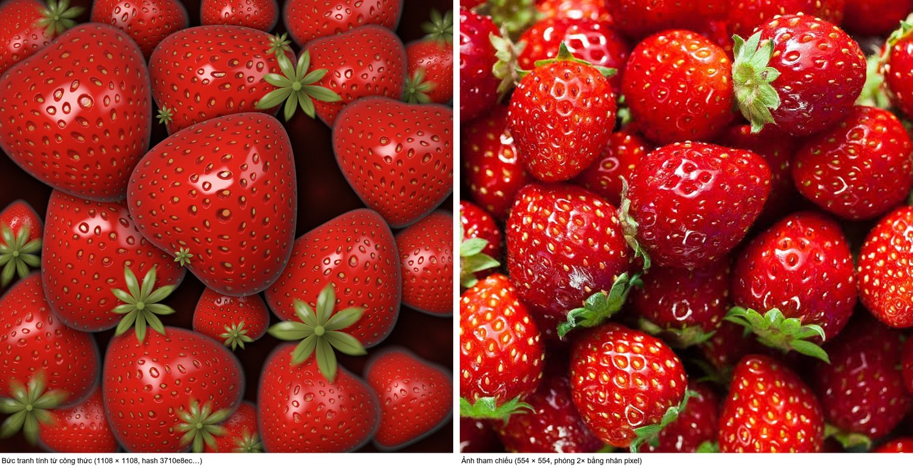
2. The two problems, in words
The claim of this section: the two problems use the same mathematical tools but differ in goal, and therefore in the criterion of success.
Let $W$ and $H$ be the width and height of the image in pixels. Let $I$ be a given image and $\hat I$ the image computed from a mathematical specification (spec).
Problem 1. Given an image $I$ of size $W \times H$. Find a self-sufficient mathematical specification, made of clearly defined shape, colour and relation components, such that the computed image $\hat I$ is close to $I$ under chosen criteria, and $\hat I$ can be recomputed pixel for pixel from the specification on any machine. When the deviation is to be reduced, which formulas must be added or changed, and at what cost in length?
Problem 2. Given a reference image $I_r$ and the features one wishes to keep. Find a complete image function, compactly defined, with parameters generated by rules, that produces a new picture similar enough and of visual quality, without storing every detail of $I_r$; among the alternatives tried, a human chooses the final one.
The criteria of success differ. Problem 1 measures the error against the original with four numbers familiar in image processing (MAE, PSNR, SSIM, $\Delta E_{2000}$, defined in 4.4) and measures pixel-exact reproduction against the specification with a hash. Problem 2 does not measure pixel error against the reference, because copying pixels is forbidden; it measures similarity at three levels (semantic, structural, surface), measures formula length, and lets a human choose among the alternatives surveyed. A detail that differs from the source is a deviation to examine in Problem 1, but may be a legitimate creative choice in Problem 2, unless it touches a locked feature.
The phrase "one formula" in Problem 2 has three meanings, and the paper uses all three in their places.
| Meaning | Content | Role |
|---|---|---|
| One output function | all colour is determined by one function with a single root; every helper function fully defined | the formal condition of Problem 2 |
| One expanded expression | substitute every helper into the root to get a single expression; may run to tens of thousands of characters | not produced in case 2; mentioned only in Appendix B |
| One compact definition with rules | an output function with a small network of helpers, many components generated from an index rather than from separate tables of numbers | the additional condition of Problem 2, measured and reported separately |
One thing must be said at once to prevent a misunderstanding: the decomposition of Problem 1 can also be written as a single function (Section 3, step 10). The difference between the two problems lies not in the number of equals signs but in the goal of fidelity to the source, the organisation of parameters and the degree to which shared rules are used. A table of tens of thousands of parameters wrapped inside $F$ is still "one function", but it is not "one compact definition".
The two cases in this paper use the same image. They illustrate two different tasks on one dataset; they are not a controlled experiment comparing two algorithms. Section 3 teaches the shared tools before entering the cases.
3. Foundations: ten steps
The claim of this section: from a single pixel to a whole picture as one function takes only ten steps, each with one formula. All ten steps use one guiding scene: "Sunset over the Sea", an 800 × 500 scene of 9 layers from Appendix A of the project's operating rules (Volume I), which we re-ran from its own code; the pixels matched the hash 8c0cd218… (Appendix C). The guiding scene is an illustration; it is not data from the two cases.
3.1 Step 1 — An image is a table of numbers
Zoom into a corner of an image and squares appear. Each square holds three numbers from 0 to 255 for the three channels red, green and blue. An image of $W \times H$ is a table of $W \cdot H$ cells, three numbers each:
$$(m, n) \mapsto (R, G, B), \qquad m = 0 \ldots W - 1,\quad n = 0 \ldots H - 1.$$
Reading: $m$ is the column index counted from the left; $n$ is the row index counted from the top. Try a value: the top-left cell is $(0, 0)$; the bottom-right cell of a 554 × 554 image is $(553, 553)$. Change $W$ or $H$ and the table changes size, but the numbering rule does not. Figure 2 enlarges one pixel of the guiding scene with its three numbers.
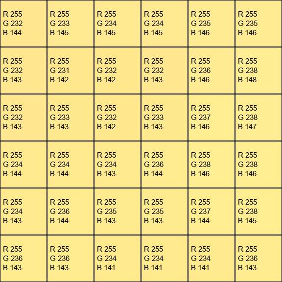
3.2 Step 2 — Putting the table on the mathematical plane
To write a function we need real coordinates instead of indices. Put the centre of the image at the origin, let the $y$ axis point up as in a mathematics book, and give both axes the same scale so that a circle in the formula is a circle in the image:
$$x = \left(\frac{m + \tfrac12}{W}\cdot 2 - 1\right) A, \qquad y = 1 - \frac{n + \tfrac12}{H}\cdot 2, \qquad A = \frac{W}{H}.$$
Reading: $(x, y)$ are the coordinates of the centre of cell $(m, n)$; the $\tfrac12$ is added because the centre lies between the two edges; $A$ is the aspect ratio, so $x$ runs over $[-A, A]$ and $y$ over $[-1, 1]$. Try a value: with $W = H = 554$, cell $(0, 0)$ has $x = (0.5/554)\cdot 2 - 1 \approx -0.998$ and $y \approx 0.998$, the top-left corner. Cell $(277, 277)$ has $x = y \approx 0.0018$, next to the centre. Change $H$ and the distance between two neighbouring cell centres, $2/H$, changes with it; this is the unit "one pixel" in every later formula. Figure 3 draws the pixel grid and the axes.
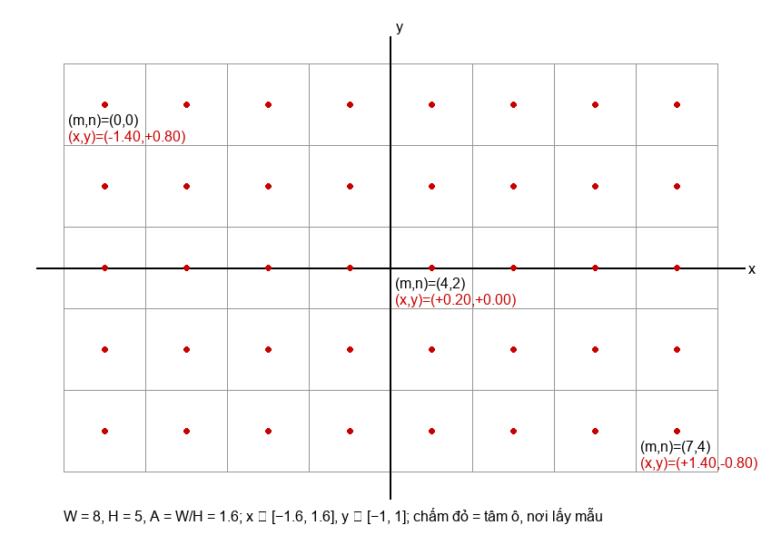
3.3 Step 3 — A function is an image
Take any function of $(x, y)$ with values in $[0, 1]$, assign it to all three channels, and we have a grey image. For example, stripes:
$$H(x, y) = \tfrac12 + \tfrac12 \sin(10x).$$
To turn this into 8-bit numbers we need an output function:
$$(R, G, B)(m, n) = \big(F(H_0(x, y)),\; F(H_1(x, y)),\; F(H_2(x, y))\big), \qquad F(t) = \left\lfloor 255\,\mathrm{clamp}(t, 0, 1) + \tfrac12 \right\rfloor.$$
Reading: $H_0, H_1, H_2$ are three functions for three channels; $\mathrm{clamp}(t, 0, 1)$ pins $t$ to the interval $[0, 1]$; $\lfloor \cdot \rfloor$ takes the integer part; adding $\tfrac12$ rounds half up. Try a value: at $x = 0$, $H = \tfrac12$, $F(\tfrac12) = \lfloor 127.5 + 0.5 \rfloor = 128$. At $x = \pi/20$, $\sin(10x) = 1$, $H = 1$, $F = 255$. Change 10 to 20 and the stripes are twice as dense. Figure 4 renders two functions: the sine stripes, and a gradient in $y$ with a different function for each channel, which is exactly how the sky is painted in step 6. We compute $H_v$ in sRGB numeric space; numeric blending is not by default a physical computation of light, and the paper records the actual choice of each renderer.
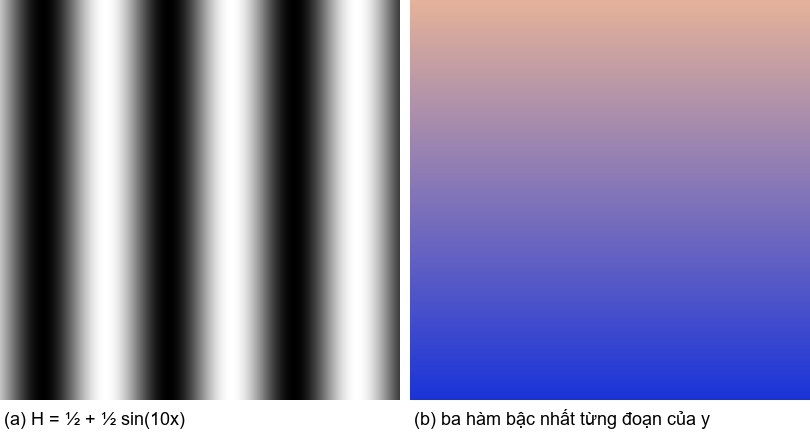
3.4 Step 4 — Shape from distance
To draw a circle, compute the distance from every point to that circle. With centre $(c_x, c_y)$ and radius $r$:
$$d(x, y) = \sqrt{(x - c_x)^2 + (y - c_y)^2} - r, \qquad d_{\text{ring}} = |d| - \tfrac{w}{2}.$$
Reading: $d$ is negative inside, zero on the circle, positive outside; this is a signed distance field (SDF). $d_{\text{ring}}$ is negative in a band of width $w$ around the circle, that is, a ring. Try a value: centre at the origin, $r = \tfrac12$; at $(0, 0)$, $d = -\tfrac12$; at $(1, 0)$, $d = \tfrac12$; at $(\tfrac12, 0)$, $d = 0$. Change $r$ to $\tfrac34$ and every $d$ drops by $\tfrac14$: the circle grows. Figure 5 draws $d$ as grey, the sign of $d$, and the ring with $w = 0.1$. Every more complex shape in the two cases begins with a distance function like this: ellipse, polygon, or a "star" whose radius varies with angle.
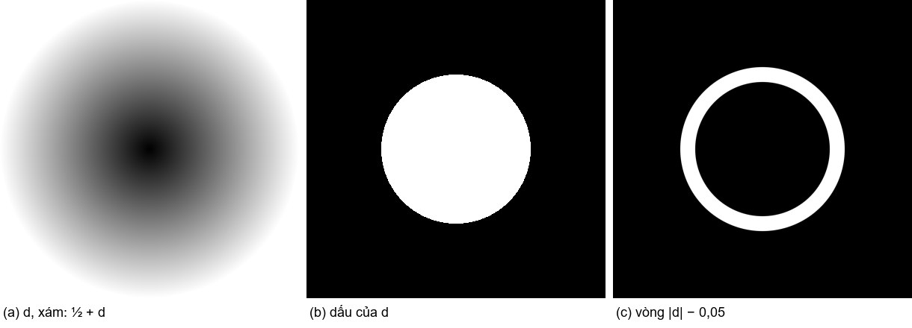
3.5 Step 5 — Hard edge, then soft edge
If we turn the distance $d$ into colour by the rule "negative means paint, positive means do not", the edge of the shape shows jagged steps, because each pixel can only take one of two values:
$$M_{\text{hard}} = \begin{cases} 1, & d \le 0 \\ 0, & d > 0. \end{cases}$$
Instead we let pixels close to the edge receive part of the colour:
$$\sigma = \mathrm{clamp}\!\left(\frac{d + \varepsilon}{2\varepsilon}, 0, 1\right), \qquad M = 1 - \sigma^2(3 - 2\sigma), \qquad \varepsilon = 0.75 \cdot \frac{2}{H}.$$
This formula computes the coverage of the object at each pixel: 1 when the pixel lies well inside ($d \le -\varepsilon$), 0 when it lies well outside ($d \ge \varepsilon$), and a smooth slide between the two levels over a band of width $2\varepsilon$, that is, 1.5 pixels. Try it at the edge, $d = 0$: $\sigma = \tfrac12$, $M = 1 - \tfrac14 \cdot 2 = \tfrac12$; a pixel right on the edge receives exactly half the colour. Double $\varepsilon$ and the edge is twice as soft; set $\varepsilon = 0$ and the steps return. Figure 6 enlarges the rim of a disc eightfold in the two ways: hard and soft. A value of $M$ between 0 and 1 is the coverage at the edge or the transparency the specification assigns; no physical meaning is attached unless the specification says so. We call $M$ a mask.
$M$ can also be written with a named function, the smoothstep $S$:
$$S(e_0, e_1, t) = \sigma^2(3 - 2\sigma), \quad \sigma = \mathrm{clamp}\!\left(\frac{t - e_0}{e_1 - e_0}, 0, 1\right), \qquad M = 1 - S(-\varepsilon, \varepsilon, d).$$
The two forms give the same numbers. Case 2 uses a third form, $S(\delta)$ with $\delta = d/\varepsilon$; Appendix A shows the three forms coincide.
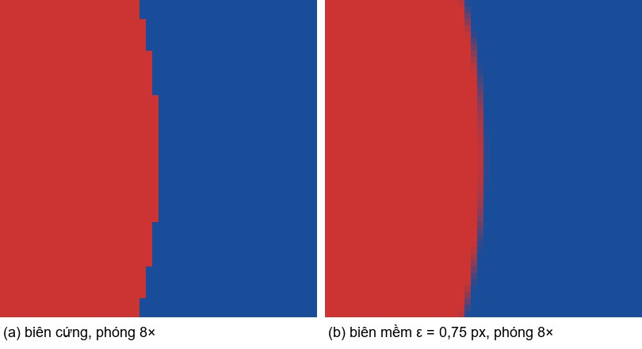
3.6 Step 6 — Colour is three functions
A colour is three numbers, so a coloured region is three functions. The sky of the guiding scene is three piecewise linear functions of $y$: at the top ($y = 1$) deep blue, in the middle pink, at the horizon ($y = 0$) orange. In general: given stops $(t_k, K_k)$, the colour at $t$ is the linear interpolation between the two neighbouring stops. Reading: $K_k$ is the triple of numbers of the $k$-th colour; $t$ here is $y$. Try a value: at $y = 0.5$, between the pink stop ($y = 0.35$) and the blue stop ($y = 1$), the colour is a mix of the two with ratio $(0.5 - 0.35)/(1 - 0.35) \approx 0.23$ leaning towards pink. Move the pink stop down to $y = 0.2$ and the pink band narrows. Figure 7 is layer L01 of the guiding scene rendered alone.
In the two cases, colour does not depend on $y$ alone. In case 1, the body colour of each berry is a combination of seven functions of position inside the berry (6.4). In case 2, colour is a function of the surface normal and the light direction (7.5).
3.7 Step 7 — Stacking layers
A picture has many objects; those in front hide those behind. Let $C$ be the image under construction, $K$ the colour of the new layer, $M$ its mask. Three common stacking operations:
$$\text{over: } C \leftarrow C\,(1 - M) + K M, \qquad \text{add: } C \leftarrow C + K M, \qquad \text{multiply: } C \leftarrow C\,\big(1 - M(1 - K)\big).$$
Reading: over replaces the old colour by the new in proportion $M$ (an opaque object hides); add adds (light, glow); multiply darkens (shadow, vignette). Try a value: $C = 0.2$, $K = 0.8$, $M = \tfrac12$: over gives $0.5$; add gives $0.6$; multiply gives $0.2 \cdot (1 - 0.5 \cdot 0.2) = 0.18$. Swap the order of two over layers and the result changes: the layer drawn later lies on top. The order of layers is therefore data of the picture, not an implementation detail. The over operation belongs to the compositing algebra of Porter and Duff [4]; we use the convention of colour not premultiplied by alpha and clamp values to $[0, 1]$ only once at the end. Figure 8 renders the guiding scene with the three operations on the same sun layer to show the difference.
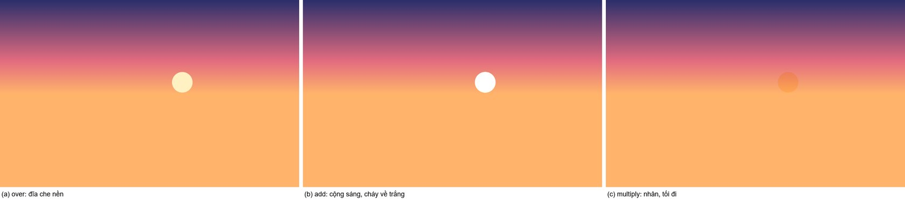
3.8 A small complete example — a disc on a background (illustration)
Steps 2 to 7 gathered into one example that can be computed by hand. A disc centred at the origin, radius $r = \tfrac12$, $\varepsilon = \tfrac1{20}$; background $\Gamma = \big(\tfrac1{10}, \tfrac3{10}, \tfrac35\big)$, disc $K = \big(\tfrac45, \tfrac15, \tfrac15\big)$:
$$d = \sqrt{x^2 + y^2} - \tfrac12, \qquad \sigma = \mathrm{clamp}\big(10\,(d + \tfrac1{20}), 0, 1\big), \qquad M = 1 - \sigma^2(3 - 2\sigma), \qquad C_v = (1 - M)\,\Gamma_v + M K_v.$$
| Point $(x, y)$ | $d$ | $\sigma$ | $M$ | $C$ before quantisation | $(R, G, B)$ after $F$ |
|---|---|---|---|---|---|
| $(0, 0)$, centre of disc | $-\tfrac12$ | 0 | 1 | $(0.8;\ 0.2;\ 0.2)$ | $(204, 51, 51)$ |
| $(1, 0)$, outside the disc | $\tfrac12$ | 1 | 0 | $(0.1;\ 0.3;\ 0.6)$ | $(26, 77, 153)$ |
| $(\tfrac12, 0)$, on the edge | 0 | $\tfrac12$ | $\tfrac12$ | $(0.45;\ 0.25;\ 0.4)$ | $(115, 64, 102)$ |
| $(\tfrac{19}{40}, 0)$, inside the edge band | $-\tfrac1{40}$ | $\tfrac14$ | $\tfrac{27}{32}$ | $(0.6906;\ 0.2156;\ 0.2625)$ | $(176, 55, 67)$ |
Compute the edge row in front of the reader: $\sigma = \tfrac12$ so $M = 1 - \tfrac14(3 - 1) = \tfrac12$; red channel $(0.1 + 0.8)/2 = 0.45$; $F(0.45) = \lfloor 114.75 + 0.5 \rfloor = 115$. The last row: $d = -\tfrac1{40}$, $\sigma = 10 \cdot \tfrac1{40} = \tfrac14$, $M = 1 - \tfrac1{16} \cdot \tfrac52 = \tfrac{27}{32}$; red channel $\tfrac{5}{32} \cdot 0.1 + \tfrac{27}{32} \cdot 0.8 = 0.690625$; $F = \lfloor 176.11 + 0.5 \rfloor = 176$. The four points above are evaluation points of the continuous field; when Figure 9 is built at 400 × 400, the four points fall into pixels $(200, 200)$, $(399, 200)$, $(300, 200)$ and $(295, 200)$, and the pixel values there, sampled at pixel centres, differ from the table by a few levels at the two points near the edge. Move the centre to $(0.3, 0)$ and all four values of $d$ change and the disc shifts right; change $r$ to $0.3$ and the disc shrinks while the edge stays exactly 1.5 pixels soft. This example teaches how to read a formula; it says nothing about the capability of the AI.
3.9 Step 8 — Objects from several parts, moved by local coordinates
A real object has several parts. The boat in the guiding scene is three shapes: a hull that is a rounded box, a sail that is a triangle, a mast that is a thick line segment; each shape a distance function, each function a mask, three masks stacked with over. To move or rotate the whole boat without editing each part, we place every part in the object's local coordinates $(u, v)$:
$$\begin{pmatrix} u \\ v \end{pmatrix} = \begin{pmatrix} \cos\beta & \sin\beta \\ -\sin\beta & \cos\beta \end{pmatrix} \begin{pmatrix} x - c_x \\ y - c_y \end{pmatrix}.$$
Reading: $(c_x, c_y)$ is where the object is placed, $\beta$ its rotation angle; $(u, v)$ are "the coordinates as seen from the object". Try a value: $\beta = 0$ gives $(u, v) = (x - c_x, y - c_y)$, a pure shift. With $\beta = \pi/2$, a point to the right of the object ($u > 0$) corresponds to a point above it in the image. Change $c_x$ and the whole boat shifts; change $\beta$ and the whole boat tilts. From this step on the paper uses complex numbers: $z = x + iy$, $c = c_x + i c_y$, and
$$w = (z - c)\,e^{-i\beta}$$
is the same shift and rotation written in one line, where $e^{-i\beta}$ means "rotate by the angle $-\beta$". Appendix A gives the equivalent real two-coordinate form. In case 1, the seeds and glints of each berry are stored relative to the centre of their parent berry, so moving the berry moves its details; case 1 made this mistake once and fixed it (6.6). Figure 10 builds the boat of the guiding scene part by part.
One more trick of step 8: a radius that varies with angle. In polar coordinates around the object's centre, $\rho = |w|$ and $\varphi = \operatorname{atan2}(\Im w, \Re w)$, an organic contour is written as a Fourier series:
$$r(\varphi) = R\Big(1 + \sum_{k=1}^{K} a_k \cos k\varphi + b_k \sin k\varphi\Big),$$
and the approximate distance function is $\rho - r(\varphi)$. Reading: $R$ is the mean radius; $a_k, b_k$ are distortions at angular frequency $k$; $K$ is the number of harmonics. Try: $a_2 = 0.1$ with all other coefficients zero gives $r(0) = 1.1R$ and $r(\pi/2) = 0.9R$, an egg elongated along the horizontal axis. Change $a_3$ and the shape grows three lobes. Case 1 uses $K = 6$ for 24 berries; case 2 uses three low-order terms so that each berry has its own shape.
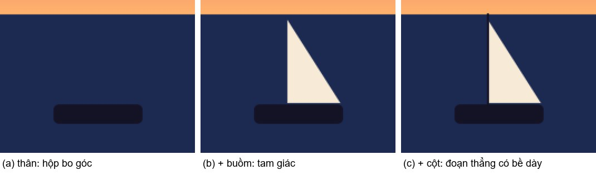
3.10 Step 9 — Texture, and "randomness" that is not random
Real surfaces are not flat: sea waves, film grain, the bumpy skin of a fruit. Two ways to make texture with functions. First, add a few sine waves at a few frequencies:
$$T(x, y) = \tfrac12 + \sum_{k} a_k \sin\!\big(p_k x + q_k y + \varphi_k\big).$$
Reading: each term is a wave with direction $(p_k, q_k)$, amplitude $a_k$, phase $\varphi_k$; if $\sum_k |a_k| \le \tfrac12$ then $T \in [0, 1]$. The sea surface of the guiding scene is one sine wave whose phase is bent by another sine wave.
Second, "randomness" by integer hash. A hash function takes two integers $(i, j)$ and returns a number in $[0, 1)$ that looks random but is fully determined, so every machine computes the same number. All arithmetic is modulo $2^{32}$, $\oplus$ is XOR, $\gg$ is a right shift:
$$n_0 = 374761393\,i + 668265263\,j + 2654435769,\quad n_1 = (n_0 \oplus (n_0 \gg 16)) \cdot 2146121005,$$ $$n_2 = (n_1 \oplus (n_1 \gg 15)) \cdot 2221713035,\quad h(i, j) = \frac{n_2 \oplus (n_2 \gg 16)}{2^{32}}.$$
Reading: three rounds of "bit mixing" by multiplication and XOR; the result is divided by $2^{32}$ to land in $[0, 1)$. Try a value: $h(0, 0) = 0.007765133399516344$, exactly the check value recorded in the rule set and in the code of both cases. Add 1 to $i$ and the result changes completely; that is what one wants from a hash. From $h$ we build value noise $\nu_f$ by bilinear interpolation of $h$ at the four corners of the grid cell containing $(fx, fy)$, and fBm as a sum of a few layers of $\nu$ at increasing frequency:
$$\mathrm{fBm}(x, y) = \frac{\sum_{o=0}^{O-1} g^{o}\, \nu_{f\lambda^{o}}(x, y)}{\sum_{o=0}^{O-1} g^{o}}.$$
Reading: $O$ layers, each with frequency multiplied by $\lambda$ and amplitude multiplied by $g$. The film grain in case 2 is one value noise at frequency 520; the dark gaps between berries use a variant called Worley F1, the distance to the nearest "seed" placed by $h$ [7]. Figure 10b renders three textures: multi-scale sine, hash noise, fBm. Texture does not by itself make a picture beautiful; both cases show that "irregularity must be moderate" (7.9).
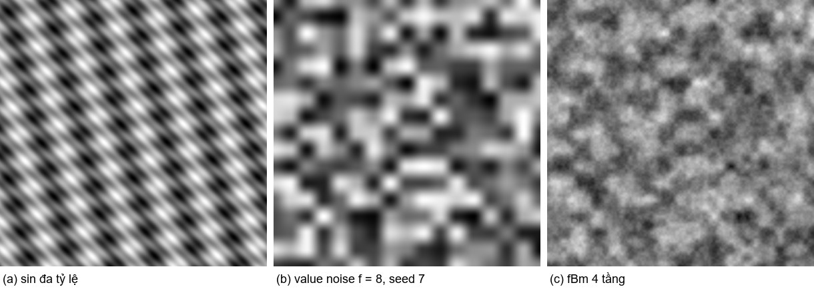
3.11 Step 10 — The whole scene is one function, and that function can be checked
Now gather every layer into one formula. First two layers, by hand. Background $\Gamma$, layer 1 behind, layer 2 in front:
$$C_1 = (1 - M_1)\,\Gamma + M_1 K_1, \qquad C_2 = (1 - M_2)\,C_1 + M_2 K_2,$$ $$C_2 = (1 - M_2)(1 - M_1)\,\Gamma + (1 - M_2)\,M_1 K_1 + M_2 K_2.$$
Reading: the background is seen only where neither layer covers; layer 1 is seen only where layer 2 does not cover; layer 2 is nearest the viewer. Try a value: $M_1 = M_2 = \tfrac12$, $\Gamma = 0$, $K_1 = K_2 = 1$: $C_2 = 0 + \tfrac14 + \tfrac12 = \tfrac34$. In general for $N$ layers, with the symbols $\sum$ (sum) and $\prod$ (product) appearing for the first time here:
$$H_v = \Gamma_v \prod_{k=1}^{N} (1 - M_k) + \sum_{k=1}^{N} M_k\, K_{k,v} \prod_{j=k+1}^{N} (1 - M_j).$$
Reading: $v$ is the colour channel; the $k$-th term is the colour of layer $k$ times the fraction it covers times the fraction every layer above it leaves uncovered; an empty product equals 1. This formula applies to a chain of over operations in one colour space without intermediate quantisation; if the specification also uses add, multiply or clamping between steps, those must appear in their places. Algebraic equivalence over the reals does not guarantee the same bytes in floating point; after changing the way of computing one must re-run and compare hashes. Case 2 uses exactly this formula for 91 layers; case 1 performs the chain of over operations sequentially, algebraically equivalent.
Step 10 is also where tables of numbers are replaced by rules. Instead of recording the position of each object in a table, we let object $s$ have a position that is a function of $s$. For example the golden-angle spiral [6] and a radius indexed by $s$:
$$c_s = \rho\sqrt{s - \tfrac12}\; e^{i\gamma s}, \qquad \gamma = \pi(3 - \sqrt5), \qquad R_s = R_0\Big(1 + \frac{\cos 7s}{4}\Big).$$
Reading: $c_s$ is the complex centre of object $s$, moving away from the origin and turning by one golden angle per step; $R_s$ oscillates around $R_0$. Try: $s = 1$ gives $|c_1| = \rho/\sqrt2$; $s = 2$ gives $|c_2| = \rho\sqrt{1.5}$. Case 2 does not use a spiral because its layout is taken from a real image (7.3), but it uses the same idea "parameter as a function of index" for individual shapes, seed-lattice phases and sepal blades. Yeganeh uses this device for object positions in his pictures [1]; his gate,
$$\mathcal{G}(u) = e^{-e^{u}}, \qquad \mathcal{G}(u) \approx 1 \text{ for } u \ll 0,\quad \mathcal{G}(u) \approx 0 \text{ for } u \gg 0,$$
is another soft step function, and appears in one candidate of case 2.
Figure 11 draws the formula tree: $F(H_v)$ at the root, below it the layer fold, below that the individual layers, then the primitive shapes, then the coordinates. Once the whole picture is one function, we check it the way we check a calculation: recompute at a few points (probes), recompute the whole image and compare one summary number (hash). With a formula in hand, computing the image is the forward problem. With only an image or an idea, finding the structure and the parameters is the inverse problem; that is where the AI takes part, and it is the subject of Sections 4 and 5.
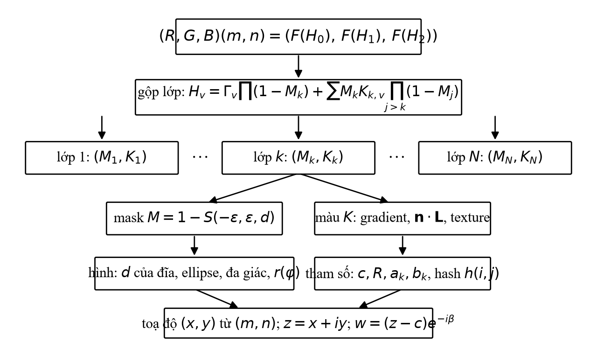
4. Principles
The claim of this section: seven principles make a picture-by-formula checkable, and they were applied in both cases under the project's two operating rule books (Volume I for reproduction, Volume II for creation and adaptation) [11].
Formula first. Every pixel is the value of a function. Hiding an image under a mathematical name is forbidden: no base64 code, no RGB arrays, no error grids laid over the image. Using a generative model as the renderer is forbidden. The code of the specification uses only numpy and the standard library, reads no external files and calls no library random functions.
Parameters with cause and effect. Every parameter has a name, an identifier, a basis (measured, observed, estimated or chosen), and changing it changes the picture as predicted. Both cases test this with perturbation tests: write the expectation first, change one parameter, render, compare with the expectation, revert. Wrong expectations are kept in the record (6.6, 7.8).
Deterministic and verifiable. Same specification, same bytes. Three tools: probes (a few pixels with expected values, tolerance ±2 per channel), the pixel hash (one number summarising the whole image), and the clean-room test (extract the code from the specification file, run it in an empty folder with a fresh process, no source image present). The EP-PIX v1 pixel hash:
$$\mathrm{hash} = \mathrm{SHA\text{-}256}\big(\text{"EP-PIX v1 } W\ H\text{ RGB\textbackslash n"} \,\|\, \text{bytes } RGB \text{ row by row from the top}\big).$$
Reading: SHA-256 is a standard hash function; its input is a header line followed by all colour bytes. Two images differing in one pixel give entirely different hashes. Try: case 1 changed one edge-softness parameter for the seeds, 83,237 pixels changed, 16/16 probes still passed but the hash differed; probes check a few points, the hash checks the whole image, and the two complement each other.
Measure, do not guess. Colours, positions and sizes are taken from the image by code; the eye is used only for semantic decisions (what is this object, which one is in front). Case 1 had one parameter set by intuition; when it was measured its best value was 0 and it was dropped (6.6).
Beauty and resemblance are two axes. Problem 1 optimises resemblance; Problem 2 holds resemblance at a constraint level and lets a human choose beauty. The two are never combined into one score.
Two periods of a work. The period of finding the formula has non-deterministic choices, changes of brief, many alternatives and human feedback. The period of reproduction only runs a frozen specification. Reproducing the output does not mean the discovery process can be repeated.
The human's role. Pose the problem, set the constraints, approve the plan at stopping points, choose the final picture. In case 2 there was one more task: approving a change of measure when the rule book's measure did not suit the image.
Figure 12 draws the loop measure → decompose → write → render → verify → revise with a "who does it" column for each step. Section 5 describes that loop in more detail.
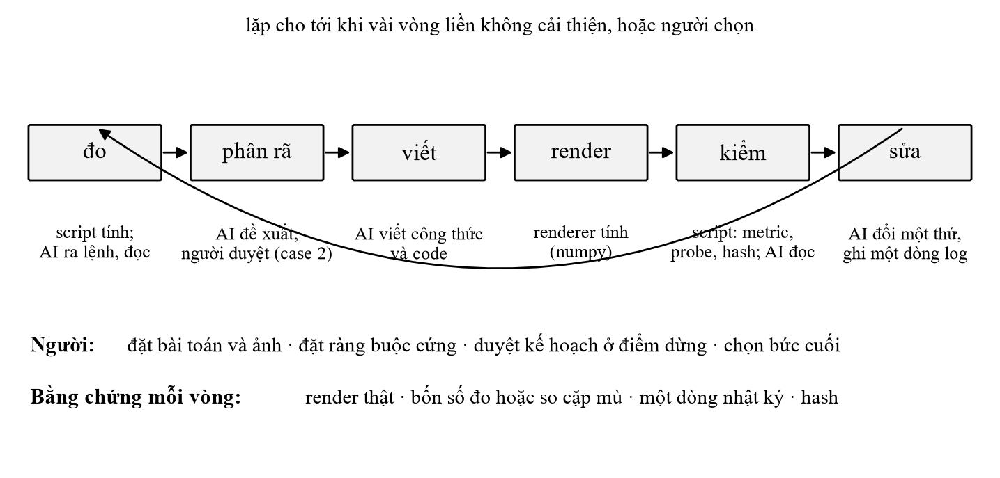
5. Method: how the AI finds a formula
The claim of this section: finding a formula is a finite search with five operations, run in a loop where every round leaves evidence.
5.1 Formal statement (an interpretive model)
Let $\mathcal{R}$ be the renderer with a published computation contract (coordinates, sampling, colour space, quantisation), and $\hat I = \mathcal{R}(\text{spec}, \theta)$ with $\theta$ the parameter set. Let $D$ be the deviation from the source and $\ell$ the description length under a published counting rule.
Problem 1 can be described as finding
$$\min_{(\text{spec},\, \theta) \in \mathcal{S}_1} \Big[ D\big(\mathcal{R}(\text{spec}, \theta),\, I\big) + \lambda\, \ell(\text{spec}, \theta) \Big], \qquad \lambda \ge 0,$$
with $\mathcal{S}_1$ the specifications satisfying the hard constraints. Case 1 did not optimise length numerically; it used a separate budget (specification under 500 KB), so the term $\lambda\ell$ is dropped.
Problem 2 is a solution set and a choice:
$$\mathcal{S}_2 = \Big\{ (\text{spec}, \theta) : \text{spec is a closed image function};\ \ell(\text{spec}, \theta) \le B;\ \mathcal{R}(\text{spec}, \theta) \text{ keeps the features in } \mathcal{A} \Big\},$$
the surveyed set $\mathcal{T} \subseteq \mathcal{S}_2$, the set put before the human $\mathcal{P} \subseteq \mathcal{T}$, and the final picture chosen by the human from $\mathcal{P}$. In case 2, $B$ is the HYBRID length class (≤ 12,000 characters, ≤ 1,500 constants, one anchor table of ≤ 48 rows), $\mathcal{A}$ is six hard constraints plus the similarity band, $|\mathcal{T}| = 60$ renders and $|\mathcal{P}| = 9$ finalists over two batches.
Both statements are interpretive models. The real process is measurement, expert choice and a finite search for a solution that meets requirements, not global optimisation. "The finalists" means good alternatives, sufficiently different, within the surveyed set, under published criteria.
5.2 Five search operations
| Operation | Meaning | Example in the two cases |
|---|---|---|
| Choose a representation | change the form of the model | case 1: berry contour by Fourier series instead of ellipse; case 2: berry shape by warping the unit disc |
| Find parameters | keep the form, change the numbers: measure, fit or choose | case 1: 12 Fourier and 21 colour coefficients per berry fitted by least squares; case 2: 105 measured numbers in the anchor table |
| Choose a structure | add or remove parts, change occlusion, change the repetition rule | case 1: add 1,418 dark pits; case 2: add contact shadows, change sepals from stars to lanceolate blades |
| Revise from feedback | read the deviation by eye or by measurement → name the problem → change → keep or revert | case 1: 12 rounds D1–D12; case 2: three rounds in batch 1, two in batch 2, two polishing steps |
| Reduce | share helpers, replace private data by rules, drop terms | case 2: each berry's own shape from a hash of its object id instead of a table of coefficients; reduction must be re-checked since it may change the image |
Changing a seed is not a search operation.
5.3 The loop and the evidence of each round
A round consists of: measure (scripts compute palette, segmentation, contours, frequencies), decompose (the AI proposes layers and objects), write (the AI writes formulas and code), render (the renderer computes the image), verify (scripts compute error, probes, hash; the AI reads the results and looks at the image), revise (the AI changes one thing and writes one log line). Each log line has the form: observation → suspected cause → change → measurement → keep or revert. Stop when several consecutive rounds bring no improvement (case 1 stopped after D9) or when the human chooses (case 2).
5.4 Measuring tools
In case 1: k-means in Lab space for the palette; marker-based watershed to separate each berry; constrained least squares to fit contours and colour fields; colour and geometric thresholds to find seeds, glints and sepals; comparison of the rendered image against the source to find what was missing. In case 2: k-means Lab for six colours; watershed on the dark gaps for 21 berries; connected components for 14 sepals; highlight offset from berry centres for the light direction; and two similarity measures (edge-map correlation, luminance-map correlation) tested on the reference image itself before use. The measurements are performed by scripts and libraries (scikit-image, OpenCV, numpy); the AI issues the commands and reads the results.
5.5 Two rule books
Both cases ran under two internal documents of the project, called Volume I and Volume II [11]. Volume I fixes coordinates, sampling, colour, compositing, masks, noise, hash, the structure of a specification, and six phases for the reproduction problem. Volume II adds the "One Formula" standard (one output function, three levels of representation, three length classes, seven verification criteria), a kit of helper functions, and a selection process with idea cards, blind pairwise judging and five roles in the finalist set. The reports of the two cases record where a rule book did not suit the image and was adjusted with approval (7.3, 8.2).
5.6 Why the loop is fast at the level of mechanism, and what belongs to the human
At the level of mechanism: rendering one 554 × 554 image of case 1 takes about 1.5 to 2 seconds; rendering one 1108 × 1108 image with four samples per pixel in case 2 takes about 42 seconds; computing error, probes and hash takes a few seconds. The process therefore gives the AI the measuring, the proposing and implementing of trial versions, the rendering and the checking within each round, so that the human concentrates on criteria and choice. Rendering time says nothing about the time to find a formula; the two are reported separately in 6.7 and 7.10.
To the human belong: posing the problem and the image; setting hard constraints; approving the plan (case 2 had one stopping point before painting); feedback on direction (case 2: "photographic"); choosing the final picture; approving the polished version. To scripts and libraries belong every measured number and every pixel value. To the AI belong: reading the image and the measurements, deciding which objects exist and which is in front, writing the formulas, choosing the hypothesis for each revision, and blind-judging the trial images in case 2, with the limitation that the judge is also the author (7.6).
The two cases show how, and how much, the AI took part in building and checking formulas; they are not enough to estimate how much time is saved compared with a person equipped with computing tools doing the same work. Section 5.7 describes the two text products of each job; Section 6 begins with the case that had the fewest stopping points.
5.7 Two products of one job: formulas for human readers and a specification for other AIs
Each picture in this paper exists in two textual forms. The first is the mathematics for human readers, as in Sections 3, 6, 7 and Appendix B. The second is a self-contained specification file in Markdown, written by the AI at the end of each job, intended for another AI to read and rebuild the exact picture. The file has eleven fixed parts: metadata (size, samples per pixel, colour space, render environment, hash); four prompts in English for four kinds of receiving AI; the computation conventions written out in full so that no other document is needed; the palette; the mathematical definitions with identifiers for every formula, object, layer and parameter; exactly one Python code block needing only numpy; the probe table and hash; a structured verbal description for generative models; a report; the adjustment knobs; and a version log.
The four prompts are divided by the receiving AI's capability. An AI that can run Python is told: copy the code block verbatim, run it, change nothing, report probe and hash results; a matching hash means the specification was reproduced, not that the picture resembles the original. An AI that can only read mathematics is told: implement the convention and definition sections in its own language, with the error-prone points named (argument order of atan2, floor towards minus infinity, clamp once at the end, round half up). A generative model receives a structured description and a warning line that its output is only an approximation and must never be used to update the probes or the hash. An AI asked to edit the picture is told: change only the objects and parameters concerned, re-render, regenerate probes and hash, increment the version.
In the two cases, the first prompt was tested in the strictest way possible on one machine: the code block was extracted from the Markdown file itself, run by a fresh Python process in a temporary folder without the original image, and the pixels matched the hash. The next two prompts are designed for the same purpose but no other AI has tried them in these two cases (Appendix C). The point for the non-specialist reader: the specification file is how two AIs can talk to each other about a picture without sending a bitmap and without losing information. The sender sends text; the receiver computes the image; both compare one number. That is the difference from a description sent to a generative model, where the receiver can only produce something similar.
6. Case study 1: repainting the strawberry photograph with many formulas
The claim of this section: a real photograph was rewritten as a deterministic program of three layers and 4,831 primitive draws; the program reproduces its specification pixel for pixel, and resembles the source at the level of "instantly recognisable" by four measures. Every event and figure comes from the report of the session of 5 October 2026 [11].
6.1 The brief Henry set
Henry wrote one sentence: "Read the file "equation_painting_bible" and then create an md file to repaint the attached picture." The attachment was a 554 × 554 JPEG of 91,064 bytes, a top-down close-up of a pile of ripe strawberries filling the frame; provenance unknown. Claude Code (model Claude Opus 5.5) decided four things on its own and stated them at hand-over: the goal is reproduction; mode H (a hybrid of semantic and numerical, target PSNR 20–28 dB under the rule book); run straight through without stopping to ask; keep the source size with one sample per pixel. Hard constraints: 1:1 frame; the number, position, size, silhouette and occlusion order of every berry; the positions of the sepals; no text. Soft goals: seed and pit texture, glints, the red hue of each berry, sepal detail.
Figure 15 places the source image (left) beside the image computed from formulas (centre) and the error map (right). The centre image contains not one pixel of the left one; it was computed from 494 KB of text.
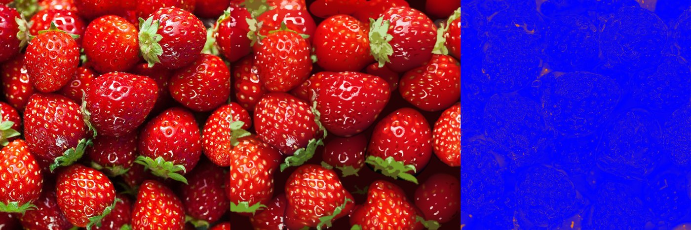
6.2 Measurement
Scripts measured, Claude Code read the results. Palette: k-means in Lab space with 12 clusters gave six shades of red covering ≈ 75 % of the area (from #220A07 dark gaps at 7.3 % to #EA2312 bright red at 17.0 %), two greens of the sepals, one orange of the seeds, two pinks and whites of the glints. This palette was only for orientation; the colours in the specification are those of each individual primitive, measured in place.
Segmenting each berry is where "seeing" decides and "measuring" executes. Claude Code looked at the image enlarged twice with a 25-pixel grid and placed one marker per berry, named B01 to B24; the watershed algorithm spread from those markers over an "elevation" map built from the luminance gradient and the dark regions, so that the dark gaps became ridges. The first pass went wrong in three places (B07 swallowed by B08, B01 merged with B02, the top strip merged); after inspecting two crops, Claude Code added markers and the second pass gave 24 regions. The number of objects and their identity were decided by sight; the algorithm only measured the boundaries. Figure 13 is the source image overlaid with the 24 region boundaries.
The other measurements, described in 6.4: each berry's contour, body colour field, seeds, glints, sepals, dark pits.
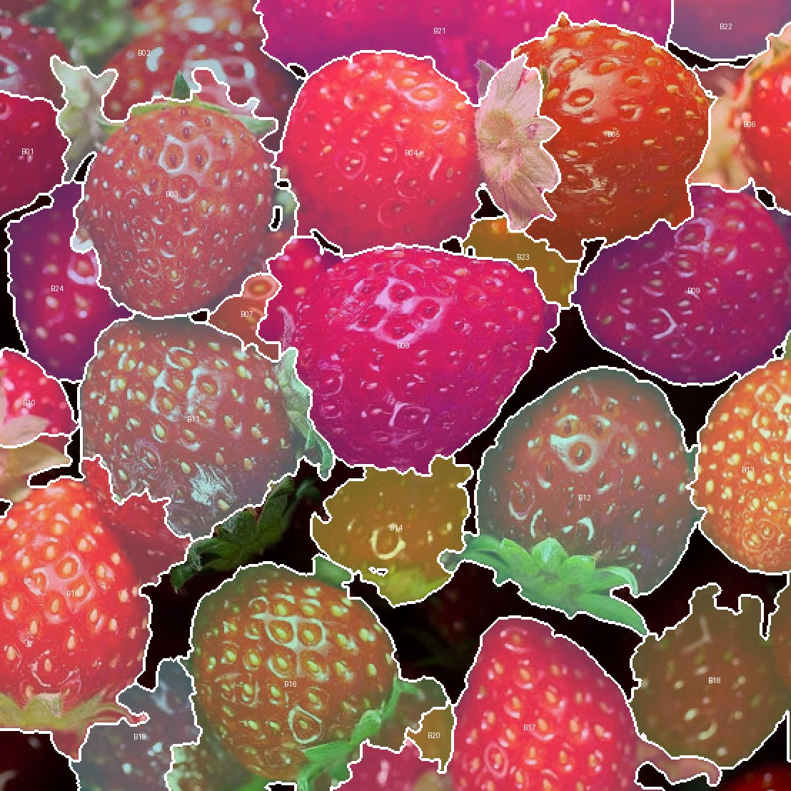
6.3 Decomposition
Three layers: L01, the background, a single colour constant; L02, the 24 berries in occlusion order, each berry consisting of its body followed by all its details; L03, the sepals on top. Five kinds of object: berry bodies (24), dark pits (1,418), seeds with pit rims (740, each drawn twice), glints (1,772: 1,210 ellipses and 562 polygons with holes), sepal polygons (137 in 18 blocks, three brightness tiers). In total 4,831 primitive draws.
This decomposition suits the image for three reasons the report gives. The soft shading of a berry body needs a colour field, not a flat colour. The edges of berries and sepals are sharp, so they need a shape function with angle-dependent radius or a polygon. Repeated details (seeds, pits, glints) share one ellipse template with a parameter table. What was dropped: the fuzz and veins of the sepals (replaced by three brightness tiers), the micro-texture of the body between seeds, the hidden parts of berries (interpolated). The number of draws exceeds the typical 100–1,000 of mode H; the report states that the specification is closer to the boundary of mode N than the rule book's description, but every primitive is still a meaningful object, with no grid laid over the image.
6.4 One component explained in full: a strawberry
Take a berry $b$ with centre $c = (c_x, c_y)$ measured as the centroid of its watershed region. Four steps from rough shape to texture; each step is a formula in the specification.
Step one, the rough shape. A berry is closer to a rounded triangle than to an ellipse, so the contour is written as a Fourier series in the polar angle $\varphi$ around the centre, with $K = 6$ harmonics (a choice):
$$r(\varphi) = r_0\Big(1 + \sum_{k=1}^{6} a_k \cos k\varphi + b_k \sin k\varphi\Big), \qquad d_b(x, y) = \rho - r(\varphi),$$
with $\rho = \sqrt{(x - c_x)^2 + (y - c_y)^2}$ and $\varphi = \operatorname{atan2}(y - c_y, x - c_x)$. Reading: $r_0$ is the mean radius; the 12 coefficients $a_k, b_k$ are the distortions at each angular frequency; $d_b$ is negative inside the berry. Try: berry B22 has $r_0 = 0.1374$, $a_1 = 0.0413$, $b_1 = 0.3028$, $a_2 = 0.0997$ (from table P-08 of the specification). The term $b_1 \sin\varphi$ alone lengthens the radius by $0.30 r_0$ in the direction $\varphi = \pi/2$; the term $a_2 \cos 2\varphi$ subtracts $0.10 r_0$ in the same direction; the remaining harmonics add and subtract a little more. The berry reaches upward. Change $a_3$ and the berry grows three lobes.
How the 12 coefficients were obtained, according to the report: constrained least squares on the boundary pixels of the watershed region. Each boundary pixel was classified by its 5 × 5 neighbourhood. A pixel bordering the background or a berry that lies behind is a true boundary and gives an equality constraint $r(\varphi_i) \approx r_i + 0.5$ px. A pixel bordering a berry in front or a sepal is an occluded boundary and gives only a lower bound $r(\varphi_i) \ge r_i + 2$ px, handled as a hinge: four iterations, keeping only the constraints currently violated, weight 0.3. High harmonics are penalised by a ridge term $\lambda_k = 0.006\,k^2$ so that the hidden part is interpolated smoothly. Result: every berry has $\min_\varphi r(\varphi)/r_0 = 0.40 > 0$, so the shape is always valid. The hidden part is an interpolation that cannot be checked against the source: berry B21 in the top strip has $a_2 = 0.65$, a distorted shape, but its visible part fits (IoU 0.779).
Step two, the soft edge. The berry body mask follows step 5, with the softness proper to this kind of object:
$$M_b = 1 - S\big(-\varepsilon_b, \varepsilon_b, d_b\big), \qquad \varepsilon_b = 3.0 \cdot \tfrac{2}{554}.$$
Reading: a transition band 6 pixels wide, softer than the 1.5-pixel anti-aliasing level, because the rim of a real berry in a photograph is not sharp. The value 3.0 was found by a sweep against the MAE, not set by hand. Change 3.0 to 0.75 and the berry acquires a vector-graphics edge.
Step three, colour and shading. The berry body as a dome. Let $t = \rho / r(\varphi)$ (0 at the centre, 1 at the edge), $p = t\cos\varphi$, $q = t\sin\varphi$, $n_z = \sqrt{\max(1 - t^2, 0)}$. The body colour is a combination of seven basis functions:
$$K_b(x, y) = \sum_{i=0}^{6} \phi_i\, C_i, \qquad (\phi_0, \ldots, \phi_6) = \big(1,\ n_z,\ p,\ q,\ t^2,\ p^2 - q^2,\ 2pq\big).$$
Reading: $C_i$ are RGB triples, 21 numbers per berry, fitted by least squares on the body pixels (excluding seed, glint and sepal pixels). $C_0$ is the base colour of the berry; $C_1$ times $n_z$ gives a bright centre and dark rim, that is, volume; $C_2$ and $C_3$ give the light direction; the three second-order coefficients capture the residual. Try: at the centre, $t = 0$, $n_z = 1$, $K_b = C_0 + C_1$; at the edge, $t = 1$, $n_z = 0$. The report tried enriching the basis to 10, 14 and 18 functions: the body error fell from 11.66 to 10.04 on the 255 scale, 14 % for 2.5 times as many functions; the report's conclusion was that the remaining error is micro-texture, not shading, and it kept 7 functions for readability.
Step four, texture. Three kinds of detail, one template: an ellipse placed relative to the berry centre, multiplied by the mask of its parent berry so that it does not spill into the gaps. For an ellipse with semi-axes $a, b$, angle $\beta$, centre $c + (\delta_x, \delta_y)$:
$$M = \Big(1 - S(-e, e, d_{\text{ellipse}})\Big) \cdot M_b, \qquad C \leftarrow C\,(1 - M) + K M,$$
with $d_{\text{ellipse}} = \big(\sqrt{(u/a)^2 + (v/b)^2} - 1\big)\min(a, b)$ in the rotated coordinates $(u, v)$ of step 8. Dark pits: 1,418 dark-red ellipses, found by rendering the scene without pits and taking the spots where the source is darker than the render by at least 0.05 in luminance (analysis by synthesis). Seeds: 740 ellipses, each drawn twice, a pit rim with semi-axes multiplied by 2.5 and a colour measured on the annulus around the seed, then the seed core. Glints: ellipses for small components, polygons with holes for large ones. Lower the rim factor 2.5 to 1.6 and the error rises from 14.63 to 14.79: the report swept three values and kept 2.5.
Figure 14 renders berry B08 through the four steps above, rebuilt from specification v1.0 for presentation. The report has no four intermediate renders of a single berry; the historical rounds D1–D12 applied to the whole scene.
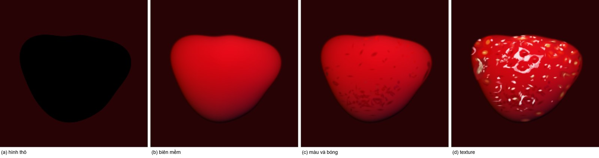
6.5 Assembling the whole scene
Only one stacking operation is used, over. Execution order: the background $K_{\text{GAP}} = $ #270305 (the median colour of the region belonging to no berry) over the whole image; then the 24 berries from back to front in the observed order (B21, B22, B02, …, B11, B08), each berry drawing its body, then all its pits, then all its seeds, then all its glints; then the 137 sepal polygons by tier. Clamp to $[0, 1]$ once at the end and quantise with $F$. In short:
$$\hat I = F\Big(\mathrm{clamp}\big(L_{03}(L_{02}(L_{01}))\big)\Big).$$
By step 10, this chain of over operations equals the one-function formula $H_v$ with $N = 4{,}831 + 1$ masks; case 1 did not write that form out, and algebraic equivalence does not guarantee identical bytes if the computation is reorganised. The renderer does not read the source image while rendering: this was checked by the clean-room test (6.7). One speed optimisation, evaluating each primitive only inside a bounding box, was proved equivalent by re-rendering the whole image without boxes: 0 pixels differ, 623 seconds against 1.5 seconds.
6.6 The decisive revisions
The report records 12 rounds D1–D12, each with one change, four measurements after it, and one decision. The layout was right from D1 (MAE 17.00); every later round lowered the MAE to 14.55, that is by 14 %. Five notable milestones:
| Milestone | What was seen | Recorded hypothesis | What changed, who did it | Measured | Decision |
|---|---|---|---|---|---|
| D2 | flat olive sepals | the linear gradient mixed in the red rim | three brightness tiers by k-means Lab; Claude Code | MAE 17.00 → 16.17; SSIM 0.555 → 0.573 | keep |
| D3 | pale orange seeds missing on four berries | the threshold caught only clearly yellow seeds | a detector on locally prominent green channel, 381 → 741 seeds; Claude Code, scripts | MAE 16.17 → 16.55 (worse); SSIM 0.573 → 0.578 | keep, with the report's reason: "MAE worse, SSIM better, looks more right" |
| D4 | the dark halo around seeds used a guessed value 0.35 | not recorded | sweep of amplitude 0 / 0.1 / 0.2 / 0.35 / 0.5 → MAE 15.53 / 15.70 / 15.99 / 16.55 / 17.20; halo dropped entirely; Claude Code, scripts | MAE 15.36 | keep |
| D5 | smooth bodies, dark-red pits missing | the body model has only low frequencies | dark pits by analysis-by-synthesis, threshold 0.05 (tried 0.05 / 0.07 / 0.10); Claude Code, renderer, scripts | MAE 14.95; SSIM 0.604 | keep |
| D11 | moving a berry left its seeds, pits, glints and sepal behind; exposed while preparing the perturbation test | details stored in absolute coordinates | detail coordinates made relative to the parent berry's centre; Claude Code | MAE 14.55, almost unchanged | keep, freeze |
The effect of D3 can be understood as follows (retrospective explanation): MAE penalises every displaced pixel, so adding many small seeds a few pixels off raises the MAE even though the structure is more correct; SSIM is sensitive to local structure and so rises. D11 did not make the image closer but fixed a design flaw that only the causality test revealed.
Two failures are in the record. The first attempt at finding pits, "image minus a 9 × 9 median", gave 3,911 components which, on inspecting the overlay, were mostly the dark rims beside glints rather than pits; it was dropped. D6, enriching the colour basis, was reverted despite lowering the error, because the gain was small compared with the loss of readability.
The perturbation test, expectations written before running: remove berry B08 and only the probe on B08 fails, pixel (281, 247) changing from (200, 6, 18) to (39, 3, 5), exposing the background. Shift B12 right by 0.10 (27.7 pixels) and the mask centroid shifts exactly 27.70 pixels and its sepal follows; but the expectation "probe on B12's sepal fails" was wrong, because the probe point landed again inside the same flat-coloured polygon; the report kept the wrong expectation in the specification. Change the background colour to black and exactly the four probes on the background fail. Change the seed edge softness from 1.5 to 0.5 and 83,237 pixels change, 16/16 probes still pass, the hash does not match.
6.7 Results
The table below separates four axes. The first two rows measure against the source (Fidelity A); the verification rows measure against the specification (Fidelity B).
| Item | Value | Conditions |
|---|---|---|
| Size | 554 × 554, A = 1, one sample per pixel | the source size |
| Layers, objects, draws | 3 layers; 24 berries; 4,831 primitive draws | |
| Formulas, named parameters | 7 formulas F-00…F-06; 5 object templates; 12 parameter groups | |
| Description length | code 460,692 bytes, 4,599 lines: shared kernel 9,814 B (2.1 %), data tables 439,962 B (95.5 %), scene functions 6,639 B (1.4 %); the tables hold 36,450 reals and 4,807 colour codes | bytes of the code block; not Kolmogorov complexity |
| Sizes compared | original JPEG 91,064 B; zlib-compressed code 115,771 B; specification file 494 KB; rendered PNG 549 KB | the specification is not compression |
| Error against source | MAE 14.55/255; max 246/255; PSNR 20.99 dB; SSIM 0.602; mean $\Delta E_{2000}$ 6.03 | 554 × 554, scikit-image 0.26.0 |
| Region overlap | area-weighted mean IoU of visible regions 0.893; lowest B20 0.113; sepal mask IoU 0.990 | against the source watershed regions |
| Pixel hash | 24fbfe2b4a63127b6d0e96ad2c8c8dc5eb3f0ea649bb4c7a75990461b9776f3a |
EP-PIX v1 |
| Probes | 16/16 PASS, tolerance ±2 | |
| Clean-room | PASS: code extracted from the .md file, run by a fresh process in an empty temporary folder without the source image; pixels match the hash; CODE_SHA256 027139ea…3f46 |
one machine: Windows 11, Python 3.14.3, numpy 2.4.6 |
| Mathematics–code agreement | 27/27 identifiers; five formulas re-implemented independently in pure Python, largest difference $1.1 \cdot 10^{-16}$ | |
| Second environment | NOT_RUN | |
| Render time | ≈ 1.5–2 s | |
| Calendar time of the session | ≈ 48 minutes (21:22 → 22:10 by file timestamps), including reading the rule book, installing tools, 12 rounds, packaging and verification; plus one 623 s test | not pure "formula-finding" time; no control |
Error decomposition at round D7: berry bodies account for 46 % of the error (58.5 % of the area, MAE 11.4); seeds and glints 28 %; sepals 16 %; berry edges 10 %. The green channel on the sepals is off by +10.4: the render is less green than the source. Figure 15 (right) is the error map; the three worst cells are the top edge above B05 and the bottom below B16, where the contours of berries behind fit short and expose dark gaps, and the lower-left region of B11, where the seven-function colour field is too smooth.
6.8 Work of the human, work of the machine, work of scripts
| Task | Henry | Claude Code | Scripts / libraries / renderer |
|---|---|---|---|
| Pose the problem, choose the image | ✔ (one command) | ||
| Choose goal, mode, resolution, run straight through | ✔ (own decision, stated at hand-over) | ||
| Measure the image (palette, segmentation, contours, colour fields, seeds, glints, sepals, pits) | issue commands, read results, place berry markers, choose detection thresholds by inspecting overlays | ✔ compute (k-means, watershed, least squares, thresholds) | |
| Decompose and plan | ✔ propose and execute | ||
| Write formulas and the code that generates the specification | ✔ | ||
| Render, probes, hash, clean-room | issue commands, read results | ✔ compute | |
| Read deviations, hypothesise, revise (12 rounds) | ✔ | metrics by scripts | |
| Choose the final picture | (approval status PENDING) |
Number of times Henry stopped to decide: 0. Revision rounds: 12. Perturbation tests: 4.
6.9 Limits of this case
One image, one kind of scene (repeated objects on a dark background). The micro-texture of berry bodies and the veins of sepals were not captured; enriching the smooth model reduced body error by only 14 %. Berries behind are interpolations that cannot be checked; B20 has only 174 pixels in the render against 937 in the source. The number of berries and the occlusion order were decided by Claude Code by sight; another person might count the rim berries differently. No other AI has yet tried to reproduce from the specification (Tiers 2, 3), nothing has run on a second machine, and no viewer perception study exists. One successful case does not prove the method suits every image. The lesson carried into case 2: once the goal is no longer to match every pixel, is that 440 KB table still needed?
7. Case study 2: painting after a reference with one formula
The claim of this section: from the same strawberry image, a new 1108 × 1108 picture was defined by one function with 27 helper functions and 91 layers; the mathematical text of that function is the bit-exact definition of the image; a human chose this picture among 9 finalists out of 60 trial renders. Every event comes from the report of the session of 6 October 2026 [11].
7.1 The reference and the similarity contract
Henry wrote: "Read the CLAUDE file and then use the attached image as the reference to carry out image creation under EP-II TASK, ADAPTATION." The attachment was the same JPEG file as in case 1. Under the rule book's defaults (Volume II), adaptation at level 2: take the palette, layout, subject, counts and light direction; take neither the contour of each berry nor the texture. The contract in the brief had six hard constraints: ripe red strawberries recognisable in a 240 px thumbnail; a pile filling the frame, no background or other objects; at least 15 visible berries; at least 6 sepal clusters; a 1:1 frame; no text, no people. Five things to keep so that the source stays recognisable: the subject; the largest berry at the centre slightly above; vermilion red with green sepal accents and cream glints; soft light from the upper left with dark gaps; a feeling of freshness and juiciness. The soft preferences (fresh, juicy, highly saturated) were Claude Code's choice because Henry did not say. Figure 1 places the reference beside the final picture.
7.2 Three levels of similarity
The semantic level is a hard constraint: fail it and the candidate is out. The structural level must stay within the band of level 2: positions and sizes of the large masses, light direction, palette. The surface level is free: seed texture, gloss, detailed shapes, degree of stylisation. The final picture keeps 21 berries and 14 sepals at the measured positions and sizes, keeps the six measured colours, keeps the light direction; it repaints the surface entirely with a lighting model, so the reference is recognised without being mistaken for a copy.
7.3 From features to rules
Measure what level 2 allows. Six-colour k-means palette in Lab: #DF2212 27.7 %, #AF221B 22.5 %, #6E1013 21.9 %, #2F0E09 12.6 % (gaps), #EBB49F 7.7 % (glints), #898F3E 7.5 % (sepals and seeds). Luminance percentiles p5/p50/p95 of 0.061/0.246/0.744; dark gaps 15.47 % of the frame. Light direction: highlight offset from berry centres gives 131.8°, diffuse gradient gives 119.8°; conclusion: a soft, broad light source, offset to the upper left. Watershed on the dark gaps separated 21 berries with equivalent radii 0.10–0.337 (frame height = 2) and 14 sepal clusters; no perspective gradient. Anchor table: 21 rows $(X_p, Y_p, r_p)$ and 14 rows $(X'_k, Y'_k, s_k)$, 105 measured numbers in total. Figure 16 overlays the measurements on the image.
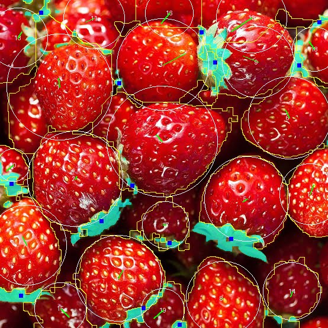
Measuring the measure itself. The rule book measures layout similarity by the correlation of 48 × 36 edge maps, with a band of 0.25–0.60. Before any candidate existed, Claude Code ran this measure on transformed versions of the reference itself and on a crude scene of red discs:
| Test image | edge correlation | 12 × 12 luminance correlation (lum12) |
|---|---|---|
| the source blurred, σ = 6 px | 0.597 | 0.999 |
| the source mirrored | 0.109 | 0.247 |
| discs at the 21 measured positions | −0.014 | 0.505 |
| discs mirrored | 0.041 | 0.129 |
| a triangular grid (entirely different layout) | −0.000 | −0.031 |
The edge measure gives correctly placed discs the same score as a formula grid: it measures seed and glint texture, not layout. The luminance measure separates the four situations. Claude Code proposed and Henry approved: the structural band uses lum12 in $[0.30; 0.85]$, the edge measure is still reported but not used to eliminate.
The decision about tables. The rule book's SHORT class (≤ 3,000 characters, ≤ 200 constants, no tables) forces the layout to be a formula of an index, a grid or a spiral. A triangular grid was tried: lum12 = −0.03, that is, the layout is lost. Because the 21 berries in the image are placed without a rule, Claude Code proposed the HYBRID class (≤ 12,000 characters, ≤ 1,500 constants, one anchor table of ≤ 48 rows). Henry asked "If you were me, how would you decide to get the most beautiful picture" and after the proposal replied "OK, go with the proposal. Thank you." At the same time Henry approved the 1108 × 1108 frame with four samples per pixel, three revision rounds, and the replacement of two idea cards. This is the fundamental difference from Yeganeh's pictures, where object positions are generated from an index [1]: the similarity constraint to a real image forces a table of measurements, at the cost of a longer formula.
So in the final picture, what is table and what is rule? Table: 35 rows of positions and sizes, 6 colours, 1 light direction. Rule: the shape of each berry, its pose, the seed lattice, the pits, the normals, the lighting, the sepals, the gaps. Every remaining constant is a choice.
7.4 One rule explained from beginning to end: each berry's own shape
The visual requirement, recorded at the polishing round: at 100 % the berries looked "stamped from one mould". To give each berry its own shape without adding 21 coefficient sets to the table, the coefficients are made functions of the object id $\iota_p$ (a fixed integer attached to berry $p$, not its row position). Take five hash values $h_l = h(\iota_p + 401, l)$, $l = 0 \ldots 4$, with $h$ the hash function of step 9, then
$$b_1 = 0.045\,(1.6h_0 - 0.5), \quad a_2 = 0.045\,(0.4 + 0.6h_1), \quad f_2 = 2\pi h_2, \quad a_3 = 0.045\,(0.15 + 0.35h_3), \quad f_3 = 2\pi h_4,$$ $$\varrho(\varphi) = 1 + b_1 \sin\varphi + a_2 \cos(2\varphi + f_2) + a_3 \cos(3\varphi + f_3).$$
Reading: $\varphi$ is the angle in the berry's frame, with $\varphi = \pi/2$ towards the stem; $\varrho$ is a radial stretch factor depending on angle; $b_1$ swells the shoulders (positive) or the tip (negative); $a_2$ with phase $f_2$ flattens the berry along one axis; $a_3$ with phase $f_3$ gives three gentle lobes. The constant 0.045 is the common amplitude (parameter SHP). Try three index values, taken from the table of numbers in the mathematical text:
| $p$ | $b_1$ | $a_2$ | $f_2$ | $a_3$ | $f_3$ | upper bound on rim offset, $|b_1| + a_2 + a_3$ |
|---|---|---|---|---|---|---|
| 0 | −0.01170 | 0.04264 | 5.8327 | 0.01079 | 2.9488 | 6.5 % of the radius |
| 1 | 0.02987 | 0.01977 | 0.5308 | 0.01576 | 5.9375 | 6.5 % |
| 2 | 0.01541 | 0.03914 | 3.8359 | 0.01778 | 6.1464 | 7.2 % |
Berry 0 has $b_1 < 0$, so its tip swells slightly; berry 1 has $b_1 > 0$, so its shoulders swell; berry 2 is flattened along an oblique axis. The report measured the largest rim offset over the 21 berries: 3.9 to 8.5 % of the radius, median 5.8 %. The berries resemble each other because they share one formula with one amplitude, but do not repeat rigidly because the five hash values differ with $\iota_p$. Change 0.045 to 0.07 and the report notes "a few berries have a flat face as if pressed", and that version lost the blind pairwise comparison; set it to 0 and every berry returns to the common shape of version v1.0. Figure 19 places v1.0 beside v1.1 at three 100 % crops: exactly this group of parameters changed, everything else held.
Why the id $\iota_p$ and not the row position? In the first batch, the seed-lattice phase and the default tip direction were computed from the table row index. When the perturbation test removed row 19, the focal berry in row 20 also changed its texture, because its index shifted. The flaw was present in all 9 pictures; the earlier test had not caught it because it only removed the last row. The fix: add a fixed-id column to the table, set equal to the old index so that no pixel changed, then re-check: removing row 19 now changes exactly that berry.
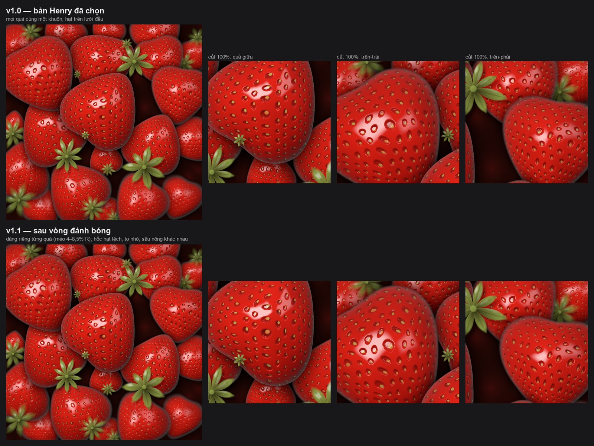
7.5 From one circle to one function for the whole picture
Each step below is a real formula in the mathematical text of the final picture (Appendix B); a few symbols have been changed to match the paper's symbol table (Appendix A). Figure 17 renders four milestones: one berry; two berries; 21 berries; the complete picture.
One berry: from disc to strawberry shape. Start with the local coordinates of step 8, divided by the radius $R_p = 1.1 r_p$ and by the stretch factor $\varrho$ of 7.4:
$$\omega = u + iv = \frac{(z - c_p)\,e^{-i\alpha_p}}{R_p\,\varrho(\varphi)}.$$
Reading: $\alpha_p$ is the pose angle of the berry (tip pointing away from its host sepal); $|\omega| = 1$ on the rim. The unit disc is warped into a heart-cone shape by a change of coordinates:
$$\hat\omega = \frac{u}{\max(1 + 0.36\,e_p v,\ 0.3)} + i\,\frac{v + 0.15\,e_p\,(v^+)^2\, e^{-6u^2}}{1 + 0.1\,e_p}, \qquad d_p(z) = 0.85\,R_p\,\varrho(\varphi)\,\big(|\hat\omega| - 1\big).$$
Reading: $v^+ = \max(v, 0)$; $e_p \in [0, 1]$ is how much of a stem end the berry has; the first denominator narrows the berry towards the tip ($v < 0$) and widens it towards the stem; the term $0.15\,e_p (v^+)^2 e^{-6u^2}$ pushes in a small dimple at the shoulder near the stem. Try: at $u = 0$, $v = -1$ (the tip), $v^+ = 0$ so $\hat\omega = -i/(1 + 0.1 e_p)$, $|\hat\omega| = 1/1.1 < 1$ when $e_p = 1$, and $d_p < 0$: the point on the unit circle at the tip side is still inside the berry, so the tip extends beyond the disc. $d_p$ is an approximate distance function, negative inside. The berry mask follows step 5: $M_p = S(d_p / \varepsilon_p)$ with $\varepsilon_p = 0.75/1108 + 0.03 D_p$, where $D_p$ is the defocus level of the berry (0 for the focal berry, up to 0.82 for distant ones). Change $D_p$ and the rim softens progressively: that is depth of field made from edge softness, with no blur operation.
Two berries, then 91 layers. Each berry produces three layers in order: a cast shadow (mask $0.55\,S(d_p(z + 0.05\hat L)/0.3R_p)$, colour black; $\hat L$ is the light direction in the image plane), a contact shadow (mask $0.7\,\langle 1 - d_p/0.25R_p\rangle^2$, colour black), then the berry (mask $M_p$, colour $K_p$). Each sepal produces two layers: shadow and blades. In total $21 \cdot 3 + 14 \cdot 2 = 91$ layers, ordered from the rearmost berry to the frontmost, each sepal immediately after its host berry. Folded by the formula of step 10:
$$C(z) = \Gamma(z) \prod_{j=1}^{91} \big(1 - M_j(z)\big) + \sum_{j=1}^{91} M_j(z)\, K_j(z) \prod_{l=j+1}^{91} \big(1 - M_l(z)\big).$$
With two berries this is exactly $C_2$ of step 10 with $\Gamma$ the dark gap. The gap $\Gamma$ is not a flat colour: $\Omega = \langle 1 - \mathcal{W}(x, y; 4.5, 3)/0.8\rangle^2$ with $\mathcal{W}$ the Worley distance, then $\Gamma = \Gamma_0(0.45 + 0.3\Omega) + 0.18(\Gamma_1 - \Gamma_0)\Omega^2$: berries below sink into darkness.
Volume and light. The base normal of a berry is treated as a hemisphere: $\nu = \hat\omega e^{i\alpha_p}$ for the two in-plane components, $\nu_3 = \sqrt{(1 - |\hat\omega|^2)^+}$ for the component towards the viewer. The flesh colour is the measured colour $\mathbf{A}$ times a channel-wise "wrapped" diffuse light:
$$K^{t} = \mathbf{A}\,\beta\,\Big( \big\langle \tfrac{\mathbf{n}\cdot\mathbf{L} + W}{1 + W} \big\rangle + 0.1\,(0.55 + 0.45\,n_3) \Big)\big(0.32 + 0.68\sqrt{\nu_3}\big)\big(1 - 0.5\hat P\big), \qquad W = (0.45;\ 0.12;\ 0.12).$$
Reading: $\langle\cdot\rangle$ clamps to $[0, 1]$; $\mathbf{n}\cdot\mathbf{L}$ is the angle between the normal and the lamp; $W$ lets the red channel receive light further round the dark side than the other two, giving the impression of red glowing through the flesh (subsurface scattering); $\beta$ is a gentle colour mottling; the last factor darkens inside the seed pits. Specular reflection adds one real number $\mathrm{Sp}$ to all three channels: Schlick's Fresnel $(0.03 + 0.97\,t^5)$ with $t = \langle 1 - n_3\rangle$, times two rectangular "softboxes" in reflection-vector space plus an environment brightening upwards. This model creates a sense of volume under its own assumptions; it does not recover the three-dimensional geometry of the original. Colours are computed in linear space and then encoded to sRGB per sample before the four samples are averaged; the report notes that this order differs from Volume I's linear profile, chosen so that the pointwise check (Test A) still runs.
Texture on the volume. The surface coordinate $\zeta' = \hat\omega(1 + 0.57\min(|\hat\omega|^2, 1))\,e^{i\phi_p}$ makes the lattice denser towards the rim (an approximation of the $\arcsin$ projection on a sphere); the hexagonal lattice
$$T(\zeta) = \tfrac13\Big[\cos(30\,\Re\zeta) + \cos(30\,\Re(\zeta E)) + \cos(30\,\Re(\zeta/E))\Big], \qquad E = e^{2\pi i/3},$$
equals 1 at the centre of each seed. Reading: three families of cosine waves 120° apart, frequency 30 giving about 14 seeds per diameter. The pit $P = S\big((\chi - T)/0.25\big)$ with a threshold $\chi$ around 0.45; the normal is tilted by the gradient of $P$ computed by finite differences ($P$ at $\zeta + 0.02$ and $\zeta + 0.02i$); the yellow seed is another smoothstep shifted towards the stem. The second polishing step adds two value noises $\nu_1, \nu_2$ on the surface coordinate so that each seed drifts 0.02 off its lattice node, pits vary 8 % in size and 30 % in depth; setting the three amplitudes to 0 gives an image bit-identical to the version before.
Closed-form fold. The final image, with four samples per pixel ($\mu_1, \mu_2 \in \{0, 1\}$):
$$(R, G, B)(m, n) = F\Big(\tfrac14 \sum_{\mu_1}\sum_{\mu_2} H(x, y)\Big), \quad x = \frac{m + (2\mu_1 + 1)/4}{554} - 1, \quad y = 1 - \frac{n + (2\mu_2 + 1)/4}{554},$$ $$H(x, y) = \mathrm{srgb}\Big(\mathrm{tone}\big(C(z)\,(1 - 0.11(x^2 + y^2))\big)\Big) + 0.018\,\big(\nu(x, y; 520, 99) - \tfrac12\big).$$
Reading: the factor $1 - 0.11(x^2 + y^2)$ is lens vignetting, multiplied in linear space; $\mathrm{tone}$ is a "shoulder" that softens highlights above 0.75; $\mathrm{srgb}$ is the sRGB encoding; the last term is film grain of amplitude 0.018 added after encoding. Try: pixel $(0, 0)$ has four samples at $x \in \{-0.99955, -0.99864\}$ and symmetric $y$, next to the top-left corner. The whole picture is this expression. Figure 20 shows the one-page formula panel of the poster; Appendix B writes out every helper function.
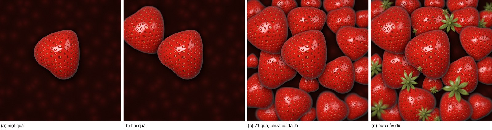
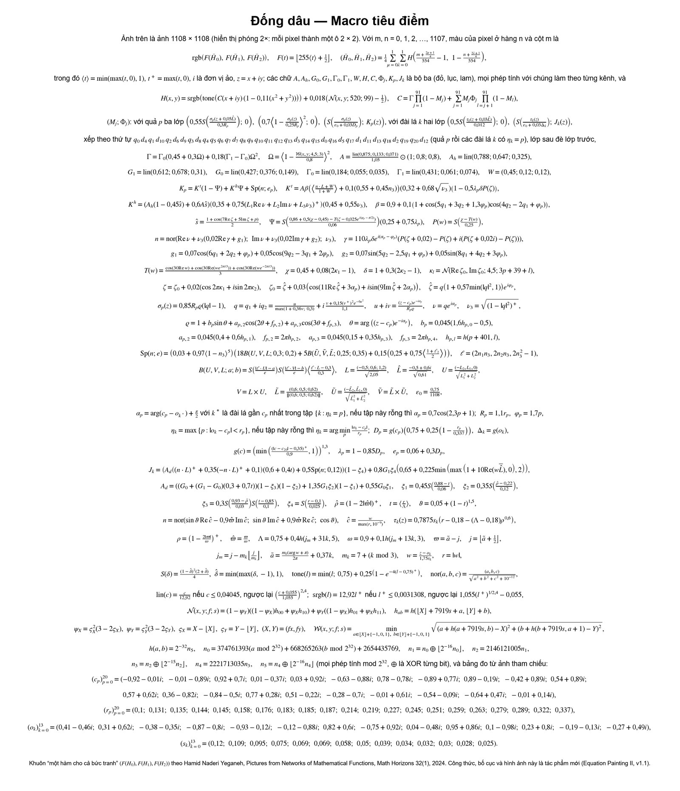
7.6 The space of alternatives and the selection
Exactly what happened, according to the report and the candidate records:
| Stage | Content | Count |
|---|---|---|
| Idea cards, batch 1 | 12 cards A–M, each with a "thesis" (one sentence stating the bet and its trade-off) and seven axes; e.g. card D "Stained glass": dark gaps become lead lines, each Voronoi cell carries the formula colour at its centre | 12 cards, 10 candidates in round 0, 8 formula families |
| Round 0, batch 1 | blind pairwise judging of 45 pairs at three sizes, each pair one winner and one sentence of reason; ranking by wins: H 9 · D 8 · F 7 · L 6 · B 5 · A 4 · E 3 · M 2 · C 1 · J 0 | 10 pictures, 45 pairs |
| Rounds 1–3, batch 1 | one problem fixed per picture per round; 4 revisions reverted (E1 outside the $\Delta E$ band at 17.8; F2 "diagonal stripes like a watermelon"; L2 lost its glowing core; B3 seeds split in two at 1108 px); ranking after round 3: D 5 · H 4 · F 3 · B 2 · L 1 · E 0 | 6 pictures, 3 × 15 pairs |
| Finalists, batch 1 | A Chiaroscuro (safe), B Three-tone poster (balanced), C Glass candy (material), D Golden lattice (Yeganeh grammar), E Stained glass (wild card); each with one role and one line "choose this when you want…" | 5 specifications |
| Henry's feedback | "Keep these 5 options, but I want to develop some further options that make the image look photographic (and closer to reality)." | |
| Batch 2, "photographic" | 6 cards N–S on one shared physically based lighting core; round p0 with 15 pairs (R eliminated: "the displaced seed lattice looks like worm holes"), p1 (a shared sepal fix), p2 (one fix per picture); P eliminated | 6 cards, 4 finalists F–I |
| Total | candidate records rendered, including eliminated and reverted versions | 60 |
The finalist set is a spectrum of choices, not the five highest scores; that is why E ranked first in round 3 and still carried the wild-card role. A change of structure (a different formula family) is distinguished from a change of parameters within the same structure: the report notes that three pictures G, H, I of batch 2 are almost the same image at the texture level, and calls them variants of one direction, not three directions. Figure 18 is the sheet of nine finalists with each one's measurements.
On "blind": temporary codes were generated from the SHA-256 of the round name, not from the card letters; the auxiliary metrics were opened only after judging. The report records the limitation: Claude Code wrote every formula and therefore recognises the styles; "blind" means only that it did not know which code belonged to which card and had not seen metrics or lengths while judging. One "really different" measure of the rule book (Hamming distance of dhash ≥ 12) failed on 9 of 10 pairs because every candidate shares the measured layout; Claude Code calibrated on the project's data with "same idea" and "different idea" benchmarks, rejected a measure it had itself proposed (edge_dhash) when it failed on the finalist set, and proposed another (LBP χ²) without using it to declare a pass, since Henry had not approved it.
7.7 Reduction and packaging
How definitions were shared: one geometric core for every candidate of batch 1 (anchor table, host sepal, pose, berry shape, surface coordinate, hexagonal lattice, sepals, gaps, layer fold) and one lighting core for batch 2; each card changed only the colouring and material part. At packaging, unused functions were pruned, identifiers renumbered, and the pixels at 480 px were checked identical to the judged version, since cleaning must not change the image. Where tables were replaced by rules: the individual shape (7.4), the seed-lattice phase, the default tip direction, the length and width of each sepal blade are all hashes of the object id; what information was given up: the true shape of each berry in the photograph (which level 2 forbids taking); how the image changed: a berry in the painting does not coincide with the contour of the berry in the photograph. Henry accepted this trade-off when approving level 2 and the HYBRID class.
Length, under the rule book's counting rule (the formula section between two marker lines, comments and whitespace removed, every numeric literal counted as a constant): 11,489 characters, 663 constants, 207 lines, 27 helper functions beyond the shared kernel and kit. The picture meets the HYBRID budget; it is longer than the four batch-1 pictures (4,165–6,085 characters) because of the lighting model. The shared part (kernel and kit) is not counted in these figures; when the specification is called "self-contained", the file holds both.
7.8 Henry chooses, and the polishing round
Henry wrote: "Take picture F." No reason was given; the taste record holds only the words and the choice. This is the author's choice, not a consensus about beauty; Claude Code's ranking is one source of comment, not an independent confirmation.
Henry asked "In your view, should there be a polishing round?", Claude Code advised one narrow round, Henry wrote "Do one polishing round as you suggest". Two steps, each with one goal, each judged blind among three versions at three sizes: each berry's own shape at amplitude 0.045 beat amplitude 0.07 and the original; a less orderly seed lattice at the moderate level beat the strong level ("large pits rising like disease spots") and the regular lattice. Final v1.0 against v1.1: v1.1 won at 100 %; at thumbnail size the two were nearly identical (dhash differing by 1 bit); 58.6 % of pixels differed by more than 2 levels, 91.7 % of them on berries. Henry: "Ok, approved." The report records the interpretation: the sentence answered the question of choosing v1.0 or v1.1, so v1.1 is the main version.
The perturbation test of v1.1, expectations written first: removing row 19 changes exactly that berry; shrinking the shape radius from 1.1 to 1.0 raises the dark-gap fraction from 0.0989 to 0.157, in the expected direction; setting the three seed parameters to 0 touches no probe, the evidence of effect being the bit-exact comparison; setting the shape amplitude to 0 was expected to raise the dark-gap fraction slightly because berries shrink, but it fell (0.0989 → 0.0973). Measured afterwards: the total berry area fell as predicted (0.9803 → 0.9764) but the area of their union did not change (0.8505 → 0.8505), because the changed rims lie beneath other berries. The wrong expectation was kept in the specification with the explanation.
7.9 Results
| Item | Value | Conditions |
|---|---|---|
| Size | 1108 × 1108, A = 1, four samples per pixel | twice the source, approved by Henry |
| Layers, helpers | 91 layers folded in closed form; 27 own helper functions; anchor table of 35 rows (105 measured numbers) | |
| Description length | 11,489 characters; 663 constants; 207 lines | counting rule in 7.7; kernel and kit not counted |
| Structural similarity | lum12 0.634 (approved band 0.30–0.85); palette $\Delta E$ 7.2 (≤ 10); edge correlation 0.175 (reported only) |
against the 554 × 554 reference |
| Hard constraints | 6/6 PASS: 21 berries, 14 sepals visible | |
| Pixel hash | 3710e8ecd15e3374fd93ca4d422df7cdc2f2136791747505130b955a7486076c |
EP-PIX v1 |
| Probes | 14/14 PASS, tolerance ±2 | |
| Pointwise Test A | 100/100 pixels recomputed with the scalar math/cmath libraries match the render |
|
| Clean-room | PASS twice on the final file, fresh process, empty folder; CODE_SHA256 093fed4f…3540 |
one machine: Windows 11, Python 3.14.3, numpy 2.4.6 |
| Mathematics–code agreement | 28/28 identifiers; 11 functions re-implemented in cmath from the mathematical text, largest difference $1.1 \cdot 10^{-16}$ |
|
| Mathematical text | re-implemented independently from the text itself, 5,000/5,000 pixels match the render, deviation 0 | |
| Tiled = whole-image computation | PASS at 1108 px | a speed optimisation that does not change the image |
| Second environment | NOT_RUN for this specification | two sample specifications of the rule book passed on two environments |
| Render time | 42.3 s (tiled); 289.9 s (whole image, no tiling) | |
| Calendar time | one day, many exchanges; the report does not record total machine minutes | no control |
Features kept, with photographic evidence (Figure 1): 21 berries and 14 sepals at the measured positions and sizes; the largest berry at the centre slightly above; the six measured colours; light from the upper left. Features interpreted: shapes, seeds, gloss, depth of field, film grain, vignetting. The project's own honest assessment: viewed at 100 %, the final picture still reads as a high-quality 3D render; the three remaining tells are berries too uniform in shape, sepals too simple, a seed lattice too orderly, and the first two were polished by one step.
7.10 Comparing the two cases on the same image
Before the numbers: the two cases differ in resolution (554² with one sample per pixel against 1108² with four) and in how length is counted (bytes of the whole code block against characters of the formula section with comments and whitespace removed). The table only places them side by side; it does not rank.
| Case 1 (P1) | Case 2 (P2) | |
|---|---|---|
| Goal | match the source pixel for pixel | level-2 similarity, compact definition, human choice |
| Data taken from the image | 36,450 reals and 4,807 colour codes (position, size, angle, colour of 4,831 primitives) | 105 numbers (35 positions and sizes) + 6 colours + 1 light direction |
| Rules replacing data | none; one row per detail | shapes, seeds, sepals, lighting from functions of index and hash |
| Length | 460,692 bytes of code | 11,489 characters of formula (plus the shared kernel and kit) |
| Fidelity to source | MAE 14.55; PSNR 20.99 dB; SSIM 0.602 | no pixel measure; lum12 0.634, palette $\Delta E$ 7.2 |
| Reproduction | hash, 16/16 probes, clean-room R1 | hash, 14/14 probes, clean-room R1, 100/100 pointwise, 5,000/5,000 from the mathematical text |
| Render | ≈ 1.5–2 s | 42.3 s |
| Points where Henry stopped | 0 | 5 |
| Trials | 12 rounds on one structure | 60 renders, 9 finalists, 2 polishing steps |
The justified conclusion: once the requirement to match every pixel is dropped and a 35-row anchor table is accepted, the scene-specific description becomes more than forty times shorter in bytes, but the picture no longer matches the source at any pixel, and that is intended. Case 1 matches a specimen; case 2 matches the way a group of shapes is organised.
7.11 Limits of this case
Only R1: two processes on the same machine. Not yet a photograph, by the project's own assessment. Blind judging is limited because the judge wrote the formulas, and in the polishing round there were only two or three versions with a judge who knew what had changed. The new thresholds (lum12 0.30–0.85, LBP χ² 0.01) are data from one project, not standards. Because the layout came from an image placed without a rule, a table is still needed; a picture with a free layout could fall into the SHORT class, but this case did not try it. What was learned: matching a specimen and matching the way a group of shapes is organised are two different tasks, needing two different measures, and only the second allows a short formula.
7.12 The alternatives not chosen, and their formulas
Of the 60 renders of case 2, nine reached the final and one was chosen. The other eight finalists are complete formulas that passed the clean-room test and Test A like the chosen one; they differ in the idea of colouring and material on the same geometric core. Figure 18 is the sheet of nine finalists with their measurements; Figure 18b is the round-0 judging sheet with the ten candidates of batch 1, four of which were eliminated early. The table below records, for each picture not chosen, its thesis, its measurements, its hash and its characteristic formula, that is, the formula that makes it differ from the others. Notation follows Appendix A; $\hat\omega$ is the warped coordinate inside the berry, $\mathbf{n}$ the normal, $\mathbf{L}$ the light direction, $\tilde{\mathbf{H}}$ the half vector, $\Lambda$ the light direction projected into the berry's coordinates, $K_S, K_M, K_L$ the three measured reds, $K_{HL}$ the glint colour, $K_{SEED}$ the seed colour, $\mathcal{G}$ Yeganeh's gate.
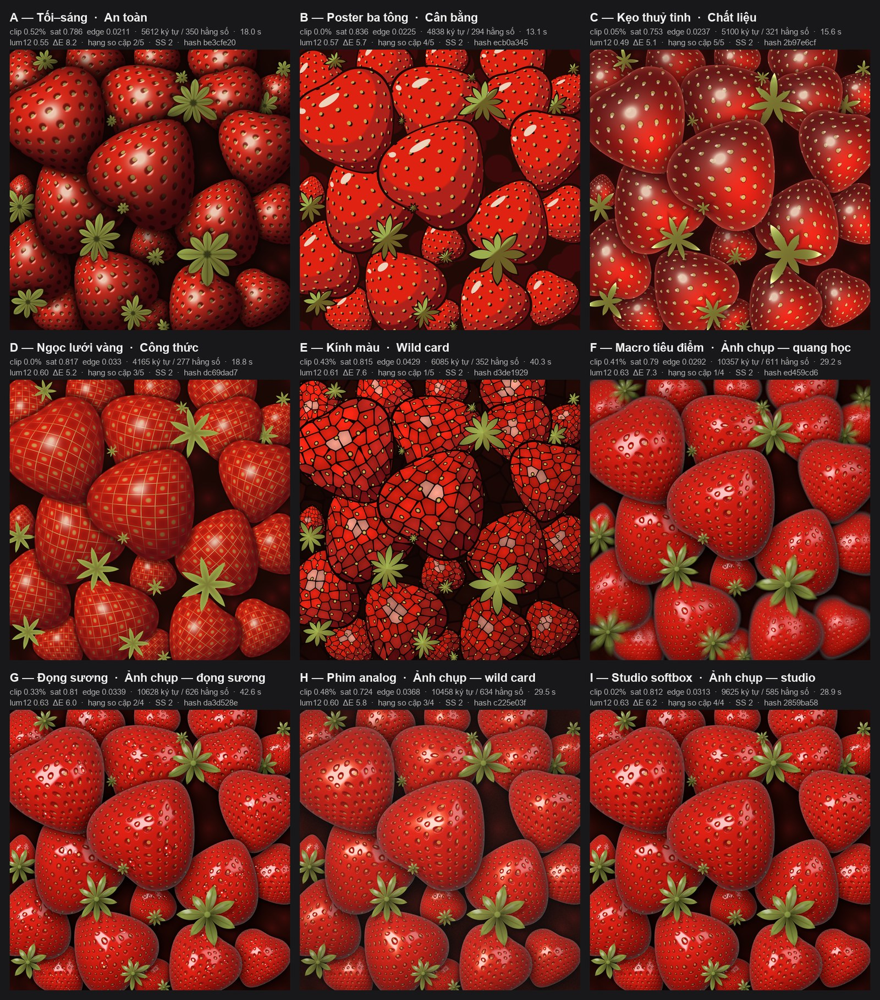
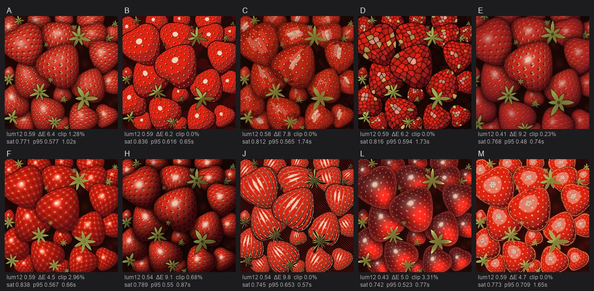
| Picture | Thesis (abridged) | Characters / constants / render | Hash | Characteristic formula |
|---|---|---|---|---|
| A Chiaroscuro (card H) | harsh, narrow light, most of the frame sunk in dark red; seeds show only where light falls | 5,612 / 350 / 18.0 s | be3cfe20 |
$d = \langle \mathbf{n}\cdot\mathbf{L} \rangle^{1.6}$, $\ell = 0.3 + 0.7d$; body colour $K_b = \mathrm{ramp}(\langle 1.2d \rangle; K_S, K_M, K_L)$ with $\mathrm{ramp}(t; K_0, K_1, K_2) = K_0 + (K_1 - K_0)\langle 2t\rangle + (K_2 - K_1)\langle 2t - 1\rangle$; seeds $\sigma \propto \langle 2d \rangle$ |
| B Three-tone poster | flat three-tone fills with ink outlines; yellow seeds printed out of register | 4,838 / 294 / 13.1 s | ecb0a345 |
three tones by $s_1 = S\big((0.22 - \mathbf{n}\cdot\mathbf{L})/0.025\big)$, $s_2 = S\big((0.64 - \mathbf{n}\cdot\mathbf{L})/0.025\big)$; ink outline by two layers: ink $M = S(d/\varepsilon)$ then fill $M = S\big((d + 0.011)/\varepsilon\big)$; offset yellow plate: lattice $T$ evaluated at $z + (0.009 - 0.006i)$ |
| C Glass candy (card L) | translucent berries, glowing core on the shadow side, Fresnel rim | 5,100 / 321 / 15.6 s | 2b97e6cf |
$\mathrm{glow} = e^{-|\hat\omega + 0.4\Lambda|^2/0.55}$; $\mathrm{fr} = (1 - n_3)^3$; body $= 0.7K_S + (1.3K_L - 0.42K_S)\,\mathrm{glow}$; rim $(0.6K_L + 0.4K_{HL})\cdot\langle 1.8\,\mathrm{fr}\rangle$ |
| D Golden lattice (card F) | Yeganeh's grammar: gate, sphere, lattice on the sphere, seven-pointed star | 4,165 / 277 / 18.8 s | dc69dad7 |
$\zeta = \arcsin(\min(|\hat\omega|, 1))\,e^{i\arg\hat\omega}e^{i\phi}$; $T = \cos(12\Re\zeta)\cos(15\Im\zeta)$; bead $\mathcal{G}\big(14(0.8 - T)\big)$; berry mask $\mathcal{G}(2d/\varepsilon)$; sepal as a star $k(\psi) = 0.3 + 0.7\big(1 - |\sin(7\psi/2)|\big)^{0.8}$ |
| E Stained glass (card D, wild card) | dark gaps become lead lines, each berry a set of Voronoi panes carrying the colour at the pane centre | 6,085 / 352 / 40.3 s | d3de1929 |
Voronoi $(F_1, F_2, P)$ in the $\hat\omega$ frame at frequency 4.2; lead $= S\big((F_2 - F_1 - 0.085)/w\big)$; pane colour takes the normal at the pane centre $P$ rather than at the pixel, three tones by $\mathbf{n}\cdot\mathbf{L}$ |
| G Dew (card Q) | as studio, plus refracting water droplets on the skin | 10,628 / 626 / 42.6 s | da3d528e |
droplet $k$ of the berry with id $\iota$: centre $0.78\sqrt{h_1}\,e^{2\pi i h_2}$, radius $0.045 + 0.06h_3$ with $h_j$ hashes of $(\iota, k)$; inside the droplet, $\rho = |\hat\omega - q_d|/r_d$: dark rim $1.12 - 0.62\,S\big((0.86 - \rho)/0.1\big)$, bright caustic $e^{-|d + 0.45\Lambda|^2/0.12}$ |
| H Analogue film (card S, wild card) | film look: warm lamp, red halation around highlights, lifted blacks, film grain | 10,458 / 634 / 29.5 s | c225e03f |
halo $\mathrm{halo} = \langle 1 - (|a| - 0.3)^+/0.35\rangle^2 \langle 1 - (|b| - 0.2)^+/0.35\rangle^2 \langle(\boldsymbol\ell\cdot\mathbf{L} - 0.55)/0.3\rangle\langle(n_3 - 0.3)/0.3\rangle$, $K \leftarrow K + 0.5\,\mathrm{halo}\,(1;\ 0.3;\ 0.12)$; warm lamp $(1.05;\ 0.97;\ 0.86)$; lifted blacks $H = \mathrm{FADE} + (1 - \mathrm{FADE})\,\mathrm{srgb}(\cdot)$; grain 0.035 |
| I Studio softbox (card N) | product photography: every berry sharp, softbox reflections on wet skin | 9,625 / 585 / 28.9 s | 2859ba58 |
the lighting core of 7.5 without depth of field, vignetting or grain; a paler, wider contact shadow: $0.5\langle 1 - d/0.38R\rangle^2$ |
Three things follow from the table. First, one measured layout and one geometric core can carry eight entirely different colourings, from a flat poster to stained glass; the "personality" of a picture lies in a few colour formulas, not in the anchor table. Second, length grows with realism: the four batch-1 pictures run 4,165–6,085 characters, the four batch-2 pictures 9,625–11,489 because of the lighting model; photographic beauty is paid for with a formula more than twice as long. Third, G, H and I of batch 2 are almost the same image at the texture level (7.6); they are three post-processing treatments of one picture, not three directions. These eight pictures remain complete works, reproducible from their specifications; they were not eliminated for being wrong but because one person chose another.
8. Discussion
8.1 Human and machine, at the right level of evidence
The paper makes statements about the AI at two levels. The level of mechanism: by the design of the two rule books, and confirmed by the reports to have run that way, the process gives the AI the measuring, the proposing and implementing of trial versions, the rendering and the hash checking in every round, so that the human concentrates on criteria and choice. The level of observation in the cases: in case 1, Claude Code performed measurement, decomposition, writing, 12 revision rounds, packaging and verification within about 48 calendar minutes by file timestamps, with no stopping point for Henry; in case 2, Claude Code rendered 60 trials, judged 90 pairs in batch 1 (45 + 15 + 15 + 15) and 15 pairs in the first round of batch 2 (the two later rounds of batch 2 do not record pair counts), packaged 9 specifications and one polished version within one day, and Henry stopped to decide at five recorded points.
Time must be separated. Render time (1.5–2 s; 42.3 s) is not formula-finding time. The calendar time of case 1 includes reading the rule book and installing tools. The cost of building reusable tools (kernel, kit, two rule books, verification scripts) lies outside both reports. No number in the two cases allows the ratio
$$S(q) = \frac{T_{\text{human + tools}}(q)}{T_{\text{AI-assisted}}(q)}$$
to be computed, because no person equipped with computing tools did the same work to the same level $q$. The two cases show how, and how much, the AI took part in building and checking formulas; they are not enough to estimate how much time is saved compared with a person equipped with computing tools doing the same work.
The two periods must also be separated. A reproducible specification does not mean that another model, given the original image again, would find the same formula. Case 2 had 60 trials and five human decisions on the way to one picture; reproducing the output only requires running one file.
8.2 Yeganeh's two questions and the data of the two cases
Yeganeh asks: can every picture be described by a function with a definition that is not too long; is there a method for finding the simplest definition [1]. The two cases do not answer in theory. They give two data points on one image. When the requirement is to match a photograph pixel for pixel at PSNR 21 dB, the definition runs to 460 KB of which 95.5 % is a table of measurements; adding 2.5 times as many shading functions reduced the error by only 14 %, so the remainder is micro-texture that a readable model does not reach. When the requirement is changed to controlled similarity and a compact definition, 11,489 characters with one 35-row table were enough for a picture chosen by a human. On the second question, the process of case 2 does not find the simplest definition; it finds a set of definitions that are good enough, different enough, within a budget, and measures each by characters, constants, render time, hash and one human choice. The paper does not use superlatives about shortness.
8.3 Limits, and a counting argument (advanced, optional)
Common limits of the two cases: one image; one kind of scene; one machine; no other AI has reproduced; no viewer perception study beyond the author. A limit of the method: the existence of a representation does not mean a good representation. Every finite image can be written as
$$I(m, n) = \sum_{i=0}^{W-1}\sum_{j=0}^{H-1} p_{ij}\, \mathbf{1}_{\{m = i\}}\, \mathbf{1}_{\{n = j\}},$$
which still stores every pixel in the guise of a "formula"; the project excludes this from the class of desired solutions without denying its mathematical validity. Many different formulas can give the same image; matching one image does not mean finding "the true formula".
On compactness, a counting argument: over a binary alphabet, the number of strings of length at most $L$ is $2^{L+1} - 1$, while there are $2^{24WH}$ 8-bit RGB images of size $W \times H$; if $L < 24WH$ there cannot be such short codes for every image. This argument lives in the stated coding model; it does not measure the formulas of the two cases, does not say that a particular image is incompressible, and does not forbid structured images from having very short descriptions. Counting characters is not counting bits. The paper calls the numbers of 6.7 and 7.9 "measured description length", not Kolmogorov complexity, and does not call their ratio to the PNG size a "compression ratio".
8.4 Related work and credit
The one-function frame $(F(H_0), F(H_1), F(H_2))$ and the gate $e^{-e^{u}}$ follow Yeganeh [1]; the project describes his way of working exactly as his article does and infers nothing further. Searching for image-generating formulas and selecting them by human visual judgement is already in Sims [2]; this project is not where that idea first appeared. The over operation and the alpha convention follow Porter and Duff [4]. Procedural noise follows Perlin [7]; the polygon distance function follows Quilez [8]; the golden-angle spiral follows Vogel [6]. SSIM follows Wang and colleagues [3]; $\Delta E_{2000}$ follows Sharma and colleagues [5]. Coordinate networks (SIREN) [9] are another way of representing an image by a function, mathematically valid, outside the transparent representation class the project chose; the paper does not conclude that they are "not mathematics". The project's level of contribution: an AI-assisted process verifiable by artifacts; a way of distinguishing and presenting two goals; observations from two cases.
8.5 Intellectual property and the reference
The strawberry image used in both cases has unknown provenance. The specification of case 1 reproduces the layout faithfully, so the rights to the image follow the specification. The specification of case 2 contains no pixel of the reference and takes from it 105 position-and-size numbers, 6 colours and one light direction; the degree of similarity is published numerically. Turning an image into a formula does not make the question of provenance disappear. The paper prints the original beside the renders for comparison, with the note that provenance is unknown. Credit to Yeganeh appears in every specification that uses the one-function frame; Yeganeh is not associated with and did not approve this work.
8.6 Future work
A controlled experiment not yet run: a person who knows mathematics, has a computer and a ready kernel, builds a 5–7 layer scene from the same brief and records the time; the AI does the same brief; compare at the same level $q$. Run both specifications on Linux or macOS with another numpy version to reach R2, R3. Give two or three other AIs, with and without code execution, the specifications and record probe and hash results (Tiers 1, 2) and the images generated from the description (Tier 3). Repeat on several images of other kinds. Try mode N on the same image to obtain a curve of primitive count – PSNR – readability. For case 2: the decisions on the "really different" measure, on level 3 (taking rough shapes from the image), and on fixing the five batch-1 pictures by object id have not been taken; the proposed 13 amendments to the rule book have not been applied.
9. Guide: building an image-to-formula system with an AI
The claim of this section: the reader does not need to write code to have a system like the one in this paper. What is needed is a code-executing AI on one's own machine (for example Claude Code or an equivalent tool, with Python and numpy), this paper, and a short prompt. This section is written as principles, not as a keystroke-by-keystroke tutorial.
9.1 Seven principles to tell the AI
- Separate the two goals from the start. Say clearly whether you want the image repainted exactly (Problem 1) or a new picture painted after the image (Problem 2). The two goals have two different measures and must not be merged into one score.
- Fix the computation contract before painting. Pixel-centre coordinates (step 2), the round-half-up output function (step 3), the 1.5-pixel soft mask (step 5), the over operation with a single clamp at the end (step 7), the integer hash in place of every random function (step 9), the EP-PIX pixel hash (Section 4). Every formula is written on that contract; changing the contract means a new version.
- Measure, do not guess. Every position, size and colour comes from the image by code (k-means, watershed, least squares); the eye only decides which objects exist and which is in front. Every parameter records its basis: measured, observed, estimated or chosen.
- One change per round, one log line. Observation, hypothesis, what changed, what was measured, keep or revert. Stop when several consecutive rounds bring no improvement, or when the human chooses.
- Verify with four tools, not with feelings. Probes (a few expected pixels), the pixel hash (the whole image), the clean-room test (re-run from the file in an empty folder with a fresh process), the perturbation test (write the expectation first, change one parameter, compare, revert). Status values are only PASS, FAIL, NOT_RUN, N/A.
- No disguised bitmaps. No base64, no pixel arrays, no error grids over the image, no generative model as renderer, no external file reads in the specification's code.
- The human keeps three tasks. Pose the problem, set the hard constraints, choose the final picture. For Problem 2, ask the AI to present several sufficiently different alternatives with theses, to judge them blind in pairs, and to stop and wait for the human's choice; never let the AI hand over one picture on its own.
9.2 The starting prompt
Give this paper to the AI (as a text file or a PDF) together with your image, then send the prompt below. The prompt is given in English first, then in Vietnamese. Replace the parts in braces.
Read the paper "Equation Painting: two problems, two ways of finding the formula" in full,
especially Section 3 (ten steps), Section 4 (principles), Section 5 (method), Section 9
(seven principles) and Appendices A, B, C. Then build me an image-to-formula system that
follows it exactly.
Step 1. Write the system's operating rules as a CLAUDE.md (or equivalent instruction file):
the computation contract (Section 3 steps 2, 3, 5, 7, 9 and Appendix A), the forbidden list
(9.1 item 6), the four verification tools (9.1 item 5), the eleven-part specification file
(5.7), and the six-step loop measure → decompose → write → render → verify → revise with a
one-line log per round (5.3). Write a Python kernel using only numpy and the standard library
for the functions of Section 3 (coordinates, mask, over, hash, value noise, basic SDFs, output
function, pixel hash). Test the kernel on the disc example of 3.8 and match the four values
(204, 51, 51), (26, 77, 153), (115, 64, 102), (176, 55, 67) before doing anything else.
Step 2. Take my image: {path}. Goal: {repaint the image exactly | paint a new picture after
the image, keeping layout, palette and light direction}. Hard constraints: {e.g. 1:1 frame,
object count, no text}. Measure the image with code first, report the measurement table and
the decomposition plan, then stop and wait for my approval.
Step 3. After approval, follow 5.3: one change per round, one log line, a real render after
each round. For "paint a new picture": write at least 8 idea cards with a thesis, build at
least 6 candidates, judge blind in pairs at three sizes, keep 3–5 finalists that differ in
idea, each with a role, then stop and wait for my choice. Never choose for me.
Step 4. Package the final picture as an eleven-part .md specification (5.7) with exactly one
code block, a probe table, the pixel hash, CODE_SHA256 and the four prompts for other AIs.
Run the clean-room test: extract the code block from the .md itself, run it in an empty
temporary folder with a fresh Python process, print REPLAY OK and the hash. Run perturbation
tests with expectations written before running. Write the human-readable mathematics in the
format of Appendix B.
General rules: report only PASS/FAIL/NOT_RUN/N/A; never write "x% similar"; never claim a
test you did not run; never change the goal or narrow the scope silently; every number in
the report comes from a real run.
Đọc trọn bài "Vẽ tranh bằng phương trình: hai bài toán, hai cách tìm công thức", đặc biệt
mục 3 (mười bậc thang), mục 4 (nguyên lý), mục 5 (phương pháp), mục 9 (bảy nguyên tắc) và
Phụ lục A, B, C. Sau đó dựng cho tôi một hệ thống đổi ảnh thành công thức theo đúng bài đó.
Bước 1. Viết bộ quy tắc vận hành của hệ thống thành một file CLAUDE.md (hoặc tệp chỉ dẫn
tương đương) gồm: hợp đồng tính toán (mục 3 bậc 2, 3, 5, 7, 9 và Phụ lục A), danh sách cấm
(mục 9.1 điểm 6), bốn công cụ kiểm (mục 9.1 điểm 5), cấu trúc file đặc tả mười một mục
(mục 5.7), và quy trình sáu bước đo → phân rã → viết → render → kiểm → sửa với nhật ký
một dòng mỗi vòng (mục 5.3). Viết kernel Python chỉ dùng numpy và thư viện chuẩn cho các
hàm của mục 3 (toạ độ, mask, over, hash, value noise, SDF cơ bản, hàm xuất màu, hash pixel).
Chạy thử kernel trên ví dụ đĩa ở mục 3.8 và đối chiếu bốn giá trị (204, 51, 51), (26, 77, 153),
(115, 64, 102), (176, 55, 67) trước khi làm việc khác.
Bước 2. Nhận ảnh của tôi: {đường dẫn ảnh}. Mục tiêu: {vẽ lại đúng ảnh | vẽ một bức mới theo
ảnh, giữ bố cục, màu và hướng sáng}. Ràng buộc cứng: {ví dụ: khung 1:1, số vật thể, không
chữ}. Đo ảnh bằng code trước, báo cho tôi bảng số đo và kế hoạch phân rã, rồi dừng chờ tôi
duyệt.
Bước 3. Sau khi tôi duyệt, làm theo mục 5.3: mỗi vòng một thay đổi, một dòng nhật ký, render
thật sau mỗi vòng. Với mục tiêu "vẽ một bức mới": viết ít nhất 8 thẻ ý tưởng có thesis, dựng
ít nhất 6 ứng viên, chấm mù theo cặp ở ba cỡ, giữ 3–5 bức chung kết đủ khác nhau, mỗi bức một
vai, rồi dừng chờ tôi chọn. Không tự chọn thay tôi.
Bước 4. Đóng gói bức cuối thành file đặc tả .md mười một mục (mục 5.7) với đúng một khối
code, bảng probe, hash pixel, CODE_SHA256, và bốn lời dẫn cho AI khác. Chạy clean-room:
trích khối code từ chính file .md, chạy trong thư mục tạm trống bằng tiến trình Python mới,
in REPLAY OK và hash. Chạy phép thử nhiễu loạn với kỳ vọng ghi trước. Viết công thức toán
cho người đọc theo mẫu Phụ lục B.
Quy tắc chung: chỉ báo PASS/FAIL/NOT_RUN/N/A; không ghi "giống x%"; không tuyên bố đã kiểm
khi chưa chạy; không đổi mục tiêu hay thu hẹp phạm vi mà không nói; mọi số trong báo cáo
lấy từ lần chạy thật.
9.3 What to expect
The times and results of the two cases in this paper are reference points, not promises. Case 1 ran about 48 calendar minutes for a 554 × 554 image with one command and no stopping point; case 2 ran one day with five stopping points and 60 renders. Images with clear, repeated objects on a simple background suit this method better than images with faces, text or dense foliage. The result of Problem 1 on a photograph stops at "instantly recognisable" (PSNR about 21 dB); going further costs many more primitives and a longer specification. The result of Problem 2 depends on the idea cards and on the person who chooses. A system built from this section will differ from the one in the paper in its details; what must be the same are the computation contract, the four verification tools, and the human keeping the three decisions.
10. Near and far applications in the age of AI
The claim of this section: the value of this approach lies not in replacing generative image AI, but in giving machine-made content a form of existence that can be read, checked, edited and handed over. This section is the authors' assessment, not an experimental result.
10.1 Near: what can be done now with the two cases as templates
Deterministic image assets for software. Icons, patterns, backgrounds and technical illustrations written as formulas do not depend on resolution, need no multiple sizes, and can be checked automatically in a release pipeline by hash. A change of brand colour is a change of one named constant.
An official version after generative AI has suggested. Generative AI produces many ideas quickly; once one is chosen, the method of this paper turns it into a picture with a formula that can be printed at any size and reproduced later. Case 2 did exactly this with a photograph as the reference; the process does not change when the reference is an AI-generated image.
Communication between AIs by specification instead of bitmap. One AI system sends a specification file to another; the receiver computes the image and compares the hash. No lossy compression, no "approximately the same". This matters when several AI agents work on one visual product and need a single source of truth.
Storing intent instead of pixels. The 1108 × 1108 picture of case 2 is a text file of a few tens of kilobytes that can be read by eye. A collection of such pictures can be searched, compared and edited by mathematical content, which cannot be done with bitmaps.
Teaching mathematics through pictures. The ten steps of Section 3 are a short course: every formula has a picture, and changing a parameter shows the effect at once. A student can read the specification of a picture, change one number, and see what happens.
Auditing AI-made content. When an organisation needs to know exactly how an image was produced, a specification with a hash is checkable evidence; a bitmap with a story is not.
10.2 Far: when AI can do this for every kind of image
A checkable language for describing images. Today images are exchanged as pixels and intentions as words. If AI becomes good enough to write formulas for most structured images, the formula becomes the medium of exchange between people and machines and between machines: shorter than pixels, more exact than words. Case 1 shows the present limit for real photographs; case 2 shows that for designed images the limit is already gone.
A library of formulas like a library of code. The kernel, the kit and the two rule books of the project are the first version of such a library. As the library grows, each new picture reuses what exists and adds only what is new; the length of the new part is the true measure of "a new idea". Yeganeh's question about short definitions [1] then has data to be answered statistically.
A trust layer for AI content. Most AI-made content today is not reproducible; every generation is a different event. A deterministic layer of content, with hashes, artifacts and a human signature, is a foundation for work that carries responsibility: publishing, contracts, evidence, education. Images are an easy place to start because the check is simple: recompute and compare one number.
A durable division of labour between human and machine. The two cases give a pattern of division that does not depend on how strong the AI is: the human poses, constrains and chooses; the machine measures, writes, renders and checks. As AI grows stronger, the middle becomes faster and wider, but the three human tasks do not disappear, because they are not computations. The paper does not predict the speed of that progress; it shows that the loop ran today, on one image, under a written rule set, and left enough evidence for others to do it again.
11. Conclusion
A picture can be defined completely by a function: the two cases give two functions on the same strawberry image, one of 460 KB matching the source at PSNR 20.99 dB and one of 11,489 characters keeping the layout, colours and light of the source in a new painting; both reproduce pixel for pixel from their text on the tested machine, and so do the eight other finalists of case 2. Unlike an image made by generative AI, an image with a formula is a fixed object: whoever computes it gets exactly it, and one number suffices to check. People have found such functions by hand, and Yeganeh has described how he builds networks of functions and runs them many times; this project uses his frame and gives credit. A code-executing AI carried out the loop of measuring, writing, rendering, checking and revising in a process that left an artifact at every step: 12 rounds and 4 perturbation tests in case 1; 60 trials, 9 finalists, 2 polishing steps and 4 tests in case 2. The human kept three tasks in both cases: posing the problem, setting the constraints, and choosing the beautiful picture. Section 9 gives the reader the way to repeat this with an AI and an image of their own. The two cases do not measure how much faster the AI is than a person; they measure what the AI did, how much, and how far it can be checked.
References
- Yeganeh, H. N. (2024). Pictures from Networks of Mathematical Functions. Math Horizons 32(1), 22–23. DOI 10.1080/10724117.2024.2368373. Open version: discovery.ucl.ac.uk/id/eprint/10203425.
- Sims, K. (1991). Artificial Evolution for Computer Graphics. Computer Graphics 25(4), 319–328 (SIGGRAPH 1991). DOI 10.1145/127719.122752.
- Wang, Z., Bovik, A. C., Sheikh, H. R., Simoncelli, E. P. (2004). Image quality assessment: from error visibility to structural similarity. IEEE Transactions on Image Processing 13(4), 600–612.
- Porter, T., Duff, T. (1984). Compositing Digital Images. Computer Graphics 18(3), 253–259.
- Sharma, G., Wu, W., Dalal, E. N. (2005). The CIEDE2000 color-difference formula: implementation notes, supplementary test data, and mathematical observations. Color Research & Application 30(1), 21–30.
- Vogel, H. (1979). A better way to construct the sunflower head. Mathematical Biosciences 44, 179–189.
- Perlin, K. (1985). An image synthesizer. SIGGRAPH Computer Graphics 19(3), 287–296.
- Quilez, I. 2D distance functions. iquilezles.org.
- Sitzmann, V., Martel, J. N. P., Bergman, A. W., Lindell, D. B., Wetzstein, G. (2020). Implicit Neural Representations with Periodic Activation Functions. arXiv:2006.09661.
- Hugging Face. Diffusers documentation: Reproducible pipelines (Reusing seeds). huggingface.co/docs/diffusers/using-diffusers/reusing_seeds (accessed 6 October 2026). — reproducibility of diffusion models depends on seed, hardware and library version.
- Accompanying project documents: report P1
dau-tay_bao-cao-qua-trinh.md(5–6 October 2026); report P2bao-cao-toan-bo_dong-dau-tay.md(6 October 2026); operating rule books Volume Iequation_painting_bible.mdv1.1 and Volume IIequation_painting_ii_bible.mdv1.1 (5–6 October 2026); specificationsdau-tay_spec_v1.0.md,dong-dau-tay_spec_v1.1.md, mathematical textdong-dau-tay_cong-thuc_v1.1.md. See Appendix C. - ITU-T Recommendation T.81 | ISO/IEC 10918-1 (1992). Information technology — Digital compression and coding of continuous-tone still images: Requirements and guidelines (the JPEG standard). The compliance part ISO/IEC 10918-2 specifies DCT and IDCT accuracy by tolerance.
- W3C / ISO/IEC 15948:2003. Portable Network Graphics (PNG) Specification (Second Edition). W3C Recommendation, 10 November 2003. — lossless compression by predictive filtering and DEFLATE.
- W3C. Scalable Vector Graphics (SVG) 1.1 (Second Edition). W3C Recommendation, 16 August 2011.
Appendix A — Notation and conventions
A.1 Symbol table
| Symbol | Meaning | In code |
|---|---|---|
| $W, H$ | image width and height (pixels) | W, H |
| $(m, n)$ | pixel indices: column from the left $0 \ldots W-1$, row from the top $0 \ldots H-1$ | m, n |
| $A = W/H$ | aspect ratio | A |
| $(x, y)$ | continuous coordinates at the pixel centre (or sample centre), $x \in [-A, A]$, $y \in [-1, 1]$, $y$ upward | x, y |
| $I$, $I_r$, $\hat I$ | source image; reference image; image computed from the specification | src, u8 |
| $\varepsilon$ | anti-aliasing half-width, $\varepsilon = 0.75 \cdot 2/H$ (further divided by the samples per side when supersampling) | EDGE |
| $z = x + iy$ | complex coordinate | z |
| $w = (z - c)\,e^{-i\beta}$ | local coordinate of an object placed at $c$, rotated by $\beta$ | w |
| $d(x, y)$ | signed distance field: negative inside, positive outside; stated when approximate | sd_* |
| $M \in [0, 1]$ | mask: coverage of the object at a pixel | mask |
| $K$, $K_v$ | colour of a layer, channel $v \in \{0, 1, 2\}$ | K |
| $\Gamma_v$ | background colour | bg |
| $C$, $H_v$ | image under construction; channel $v$ before quantisation | img, H0, H1, H2 |
| $F(t)$ | 8-bit output function | to_uint8 |
| $G$ | two-dimensional Gaussian | gauss |
| $S$ | smoothstep | smoothstep, sstep |
| $\mathcal{G}(u) = e^{-e^{u}}$ | Yeganeh's gate | gate |
| $s$ | object index in a sequence | s |
| $\gamma = \pi(3 - \sqrt5)$ | golden angle | in spiral |
| $h(i, j) \in [0, 1)$ | deterministic integer hash | hash2 |
| $\nu$, $\mathrm{fBm}$, $\mathcal{W}$ | value noise, fBm, Worley F1 distance | value_noise, fbm, worley |
| $\tau, \mathbf{n}, \mathbf{L}$ | normalised radius, normal, light direction | sphere |
| $\varphi$ | polar angle | th |
| $\theta$ | parameter set of a specification | — |
| $D$, $\ell$ | deviation from the source; description length under a published counting rule | — |
| $\langle a \rangle$ | $\min(\max(a, 0), 1)$; $a^+ = \max(a, 0)$ | clip |
Symbols specific to case 2, declared here so that Appendix B can be read: $p$ berry index ($0 \ldots 20$), $k$ sepal index ($0 \ldots 13$); $\iota_p$, $\iota_k$ object ids (the sid column); $c_p$, $r_p$ measured centre and radius; $o_k$, $s_k$ measured sepal centre and size; $R_p = 1.1 r_p$; $\alpha_p$ pose angle; $e_p$ stem-end level; $\phi_p = 1.7\,\iota_p$ seed-lattice phase; $\varrho$ individual shape stretch; $\omega$, $\hat\omega$ local coordinates before and after warping; $\zeta$ surface coordinate; $T$ hexagonal lattice; $P$ pit; $\Psi$ seed; $\mathrm{Sp}$ specular reflection; $D_p$, $D'_k$ defocus levels; $\lambda_p = 1 - 0.85 D_p$ detail level; $\mathbf{L}$, $\hat L$ light direction in three dimensions and in the image plane; $U, V, U', V'$ axes of the two softboxes; $\mathbf{A}$ (triple) flesh colour, $\mathbf{A}_h$ seed, $G_0, G_1$ sepal, $\Gamma_0, \Gamma_1$ gap. Because $A$ is also the aspect ratio, the flesh colour is written in bold $\mathbf{A}$ in Appendix B.
A.2 Conversions of convention from the sources
| Point in the source | Treatment in the paper |
|---|---|
| The mathematical text of case 2 uses $\theta$ for the angle in the berry frame, $\sigma_p$, $\tau_k$ for object ids, $\varepsilon_p$ for the stem-end level, $q$ for the warped coordinate, $\kappa_1, \kappa_2$ for the two noises | the paper writes $\varphi$, $\iota_p$, $\iota_k$, $e_p$, $\hat\omega$, $\nu_1, \nu_2$; Appendix B keeps the numbers and structure exactly |
| Case 1 uses $\theta$ for the polar angle and $(p, q)$ for $t\cos\theta$, $t\sin\theta$ | the paper writes $\varphi$; $(p, q)$ is kept because it appears only in 6.4 |
| The kit's smoothstep $S(\delta) = \tfrac14(1 - \hat\delta)^2(2 + \hat\delta)$, $\hat\delta = \mathrm{clamp}(\delta, -1, 1)$ | equals $M = 1 - \sigma^2(3 - 2\sigma)$ with $\sigma = (\hat\delta + 1)/2$: expand $1 - \tfrac14(\hat\delta + 1)^2(2 - \hat\delta) = \tfrac14(1 - \hat\delta)^2(2 + \hat\delta)$; checked numerically at 10,000 points, largest difference $2.2 \cdot 10^{-16}$ |
| An internal draft recorded the two hash multipliers as 2126687533 and 2221647499 | the kernel code of both cases and Volume I §5.6 use 0x7FEB352D = 2146121005 and 0x846CA68B = 2221713035; the paper uses the code's values; check value $h(0, 0) = 0.007765133399516344$ |
| Case 2 encodes sRGB per sample before averaging the four samples | differs from Volume I's "linear" profile (encode after averaging); the paper describes the renderer actually used |
| Case 1 computes entirely in sRGB numeric space | recorded as such; numeric blending is not a computation of light |
| Yeganeh's output function $\big\lfloor 255\, e^{-e^{-1000t}}\, |t|^{\,e^{-e^{1000(t-1)}}} \big\rfloor$ | not used in the two cases; the paper's $F$ rounds half up |
| Reproduction grades R0–R3 of the rule books | the paper states reproduction in words (Appendix C) |
| "Pixel-exact to the spec" | always stated as: against the source (Fidelity A) or against the specification's standard render (Fidelity B) |
| Caps of 3,000 characters / 200 constants (SHORT), 12,000 / 1,500 (HYBRID) | project budgets; case 2 used HYBRID with Henry's approval |
| Real two-coordinate form of $w = (z - c)e^{-i\beta}$ | $u = \cos\beta\,(x - c_x) + \sin\beta\,(y - c_y)$, $v = -\sin\beta\,(x - c_x) + \cos\beta\,(y - c_y)$ |
Appendix B — Full formulas
B.1 The picture "Pile of Strawberries — Macro Focus" v1.1 (case 2), one function with every helper numbered
Source: the mathematical text dong-dau-tay_cong-thuc_v1.1.md (Level B, every parameter substituted by its number), re-implemented independently and matching 5,000/5,000 pixels of the standard render. Notation follows Appendix A. The letters $\mathbf{A}, \mathbf{A}_h, G_0, G_1, \Gamma_0, \Gamma_1, W, K, C, H$ are channel triples; $+, -, \cdot, /$ with a real number act per channel.
B1. Root. $$(R, G, B)(m, n) = F\Big(\tfrac14 \sum_{\mu_1 \in \{0,1\}} \sum_{\mu_2 \in \{0,1\}} H(x, y)\Big), \quad x = \frac{m + (2\mu_1 + 1)/4}{554} - 1, \quad y = 1 - \frac{n + (2\mu_2 + 1)/4}{554}, \quad m, n = 0 \ldots 1107.$$ $$F(t) = \lfloor 255\langle t\rangle + \tfrac12 \rfloor, \qquad H(x, y) = \mathrm{srgb}\Big(\mathrm{tone}\big(C(z)(1 - 0.11(x^2 + y^2))\big)\Big) + 0.018\big(\nu(x, y; 520, 99) - \tfrac12\big), \quad z = x + iy.$$ $$C(z) = \Gamma(z)\prod_{j=1}^{91}(1 - M_j(z)) + \sum_{j=1}^{91} M_j(z)\,K_j(z)\prod_{l=j+1}^{91}(1 - M_l(z)).$$
B2. Basic functions. $$S(\delta) = \tfrac14(1 - \hat\delta)^2(2 + \hat\delta), \quad \hat\delta = \min(\max(\delta, -1), 1).$$ $$h(a, b): \ n_0 = 374761393\,a + 668265263\,b + 2654435769;\ n_1 = n_0 \oplus (n_0 \gg 16);\ n_2 = 2146121005\,n_1;\ n_3 = n_2 \oplus (n_2 \gg 15);\ n_4 = 2221713035\,n_3;\ n_5 = n_4 \oplus (n_4 \gg 16);\ h = n_5/2^{32} \ (\text{all arithmetic mod } 2^{32}).$$ $$\nu(x, y; f, s): \ X = xf,\ Y = yf,\ a_0 = \lfloor X\rfloor + 7919 s,\ b_0 = \lfloor Y\rfloor,\ t_X = X - \lfloor X\rfloor,\ t_Y = Y - \lfloor Y\rfloor,\ u_X = t_X^2(3 - 2t_X),\ u_Y = t_Y^2(3 - 2t_Y),$$ $$\nu = \mathrm{mix}\big(\mathrm{mix}(h(a_0, b_0), h(a_0 + 1, b_0), u_X),\ \mathrm{mix}(h(a_0, b_0 + 1), h(a_0 + 1, b_0 + 1), u_X),\ u_Y\big), \quad \mathrm{mix}(a, b, t) = a(1 - t) + bt.$$ $$\mathcal{W}(x, y; f, s) = \min_{\delta a, \delta b \in \{-1, 0, 1\}} \sqrt{(a + h(a + 7919 s, b) - X)^2 + (b + h(b + 7919 s, a + 1) - Y)^2}, \quad X = xf,\ Y = yf,\ a = \lfloor X\rfloor + \delta a,\ b = \lfloor Y\rfloor + \delta b.$$ $$\mathrm{lin}(c) = \begin{cases} c/12.92, & c \le 0.04045 \\ ((c + 0.055)/1.055)^{2.4}, & \text{otherwise} \end{cases} \qquad \mathrm{srgb}(l) = \begin{cases} 12.92\,l^+, & l^+ \le 0.0031308 \\ 1.055\,(l^+)^{1/2.4} - 0.055, & \text{otherwise} \end{cases}$$ $$\mathrm{tone}(l) = \min(l, 0.75) + 0.25\big(1 - e^{-4(l - 0.75)^+}\big), \qquad \mathrm{nor}(a, b, c) = (a, b, c)/\sqrt{a^2 + b^2 + c^2 + 10^{-12}}.$$
B3. Constants measured from the reference. Berries $p = 0 \ldots 20$: $(X_p, Y_p, r_p, \iota_p)$ with $\iota_p = p$:
| $p$ | $X_p$ | $Y_p$ | $r_p$ | $p$ | $X_p$ | $Y_p$ | $r_p$ | $p$ | $X_p$ | $Y_p$ | $r_p$ |
|---|---|---|---|---|---|---|---|---|---|---|---|
| 0 | −0.92 | −0.01 | 0.100 | 7 | −0.89 | 0.77 | 0.183 | 14 | 0.77 | 0.28 | 0.251 |
| 1 | −0.01 | −0.89 | 0.131 | 8 | 0.89 | −0.19 | 0.185 | 15 | 0.51 | −0.22 | 0.259 |
| 2 | 0.92 | 0.70 | 0.135 | 9 | −0.42 | 0.89 | 0.187 | 16 | −0.28 | −0.70 | 0.263 |
| 3 | 0.01 | −0.37 | 0.144 | 10 | 0.54 | 0.89 | 0.214 | 17 | −0.01 | 0.61 | 0.279 |
| 4 | 0.03 | 0.92 | 0.145 | 11 | 0.57 | 0.62 | 0.219 | 18 | −0.54 | −0.09 | 0.289 |
| 5 | −0.63 | −0.88 | 0.158 | 12 | 0.36 | −0.82 | 0.227 | 19 | −0.64 | 0.47 | 0.322 |
| 6 | 0.78 | −0.78 | 0.176 | 13 | −0.84 | −0.50 | 0.245 | 20 | −0.01 | 0.14 | 0.337 |
Sepals $k = 0 \ldots 13$: $(X'_k, Y'_k, s_k, \iota_k)$ with $\iota_k = k$:
| $k$ | $X'_k$ | $Y'_k$ | $s_k$ | $k$ | $X'_k$ | $Y'_k$ | $s_k$ |
|---|---|---|---|---|---|---|---|
| 0 | 0.41 | −0.46 | 0.120 | 7 | −0.75 | 0.92 | 0.050 |
| 1 | 0.31 | 0.62 | 0.109 | 8 | 0.04 | −0.48 | 0.039 |
| 2 | −0.38 | −0.35 | 0.095 | 9 | 0.95 | 0.86 | 0.034 |
| 3 | −0.87 | −0.80 | 0.075 | 10 | 0.10 | −0.98 | 0.032 |
| 4 | −0.93 | −0.12 | 0.069 | 11 | 0.23 | 0.80 | 0.030 |
| 5 | −0.12 | −0.88 | 0.069 | 12 | −0.19 | −0.13 | 0.028 |
| 6 | 0.82 | 0.60 | 0.058 | 13 | −0.27 | 0.49 | 0.025 |
Colours (measured sRGB, converted to linear): $\mathbf{A} = \mathrm{lin}(0.875; 0.133; 0.071)/1.05 \cdot (1; 0.8; 0.8)$ flesh; $\mathbf{A}_h = \mathrm{lin}(0.788; 0.647; 0.325)$ seed; $G_1 = \mathrm{lin}(0.612; 0.678; 0.310)$, $G_0 = \mathrm{lin}(0.427; 0.376; 0.149)$ sepal light and dark; $\Gamma_0 = \mathrm{lin}(0.184; 0.055; 0.035)$ gap; $\Gamma_1 = \mathrm{lin}(0.431; 0.061; 0.074)$ dark red. Complex centres $c_p = X_p + iY_p$, $o_k = X'_k + iY'_k$.
B4. Derived quantities (computed once). $$\mathbf{L} = (-0.5;\ 0.6;\ 1.2)/\sqrt{2.05}, \quad \hat L = (-0.5 + 0.6i)/\sqrt{0.61}, \quad U = (-L_2, L_1, 0)/\sqrt{L_1^2 + L_2^2}, \quad V = \mathbf{L} \times U,$$ $$\mathbf{L}' = (0.6;\ 0.5;\ 0.62)/\|(0.6;\ 0.5;\ 0.62)\|, \quad U' = (-L'_2, L'_1, 0)/\sqrt{L'^2_1 + L'^2_2}, \quad V' = \mathbf{L}' \times U', \quad W = (0.45;\ 0.12;\ 0.12), \quad E = e^{2\pi i/3}, \quad \varepsilon_0 = 0.75/1108.$$ Host berry of a sepal: $\eta_k = \max\{p : |o_k - c_p| < r_p\}$ if the set is non-empty, otherwise $\eta_k = \arg\min_p |o_k - c_p|/r_p$. Values: $\eta = (15, 17, 18, 13, 0, 16, 2, 7, 3, 2, 1, 17, 20, 17)$ for $k = 0 \ldots 13$. Pose of berry $p$, with $\mathcal{K}_p = \{k : \eta_k = p\}$: if $\mathcal{K}_p \ne \emptyset$, take $k^*$ with the smallest $|c_p - o_k|$, $\Delta_p = c_p - o_{k^*}$, $\alpha_p = \arg\Delta_p + \pi/2$, $e_p = \langle(|\Delta_p|/r_p - 0.15)/0.5\rangle$; if $\mathcal{K}_p = \emptyset$, $\alpha_p = 0.7\cos(2.3\,\iota_p + 1)$, $e_p = 1$. $R_p = 1.1 r_p$; $\phi_p = 1.7\,\iota_p$. (In this picture $e_p = 1$ for every $p$.) Individual shape: $h_l = h(\iota_p + 401, l)$, $l = 0 \ldots 4$; $b_1 = 0.045(1.6h_0 - 0.5)$, $a_2 = 0.045(0.4 + 0.6h_1)$, $f_2 = 2\pi h_2$, $a_3 = 0.045(0.15 + 0.35h_3)$, $f_3 = 2\pi h_4$. Depth of field: $c_F = c_{20}$; $g(c) = \big(\min((|c - c_F| - 0.35)^+/0.9, 1)\big)^{1.3}$; $D_p = g(c_p)(0.75 + 0.25(1 - r_p/0.337))$; $D'_k = g(o_k)$; $\lambda_p = 1 - 0.85 D_p$; $e^{\mathrm{sp}}_p = 0.06 + 0.3 D_p$.
B5. Berry $p$. Shape: $\varphi = \arg((z - c_p)e^{-i\alpha_p})$; $\varrho = 1 + b_1\sin\varphi + a_2\cos(2\varphi + f_2) + a_3\cos(3\varphi + f_3)$; $\omega = u + iv = (z - c_p)e^{-i\alpha_p}/(R_p\varrho)$; $$\hat\omega = \frac{u}{\max(1 + 0.36 e_p v, 0.3)} + i\,\frac{v + 0.15 e_p (v^+)^2 e^{-6u^2}}{1 + 0.1 e_p}, \qquad d_p(z) = 0.85 R_p\,(|\hat\omega| - 1)\,\varrho.$$ Base normal: $\nu^{\circ} = \hat\omega e^{i\alpha_p}$, $\nu_3 = \sqrt{(1 - |\hat\omega|^2)^+}$; $q_1 = \Re\hat\omega$, $q_2 = \Im\hat\omega$. Surface: $\zeta' = \hat\omega(1 + 0.57\min(|\hat\omega|^2, 1))e^{i\phi_p}$; $\zeta_0 = \zeta' + 0.03(\cos(11\Re\zeta' + 3\alpha_p) + i\sin(9\Im\zeta' + 2\alpha_p))$; $\nu_1 = \nu(\Re\zeta_0, \Im\zeta_0; 4.5, 3\iota_p + 40)$, $\nu_2 = \nu(\Re\zeta_0, \Im\zeta_0; 4.5, 3\iota_p + 41)$; $\zeta = \zeta_0 + 0.02(\cos 2\pi\nu_1 + i\sin 2\pi\nu_2)$; $\chi = 0.45 + 0.08(2\nu_1 - 1)$; $\delta = 1 + 0.3(2\nu_2 - 1)$. $$T(\zeta) = \tfrac13[\cos(30\Re\zeta) + \cos(30\Re(\zeta E)) + \cos(30\Re(\zeta/E))]; \quad P = S((\chi - T(\zeta))/0.25),\ P' = S((\chi - T(\zeta + 0.02))/0.25),\ P'' = S((\chi - T(\zeta + 0.02i))/0.25);$$ $$\gamma_P = ((P' - P) + i(P'' - P))\cdot 110\,\lambda_p\,\delta\,e^{i(\alpha_p - \phi_p)}; \quad g_1 = 0.07\cos(6q_1 + 2q_2 + \phi_p) + 0.05\cos(9q_2 - 3q_1 + 2\phi_p),\ g_2 = 0.07\sin(5q_2 - 2.5q_1 + \phi_p) + 0.05\sin(8q_1 + 4q_2 + 3\phi_p);$$ $$\mathbf{n} = \mathrm{nor}\big(\Re\nu^{\circ} + 0.02\nu_3\Re\gamma_P + g_1\nu_3,\ \Im\nu^{\circ} + 0.02\nu_3\Im\gamma_P + g_2\nu_3,\ \nu_3\big); \quad \hat P = P\,\delta\,\lambda_p;$$ $$\Psi = S\Big(\big(0.86 + 0.5(\chi - 0.45) - T(\zeta - 0.025 e^{i(\phi_p - \pi/2)})\big)/0.06\Big)(0.25 + 0.75\lambda_p).$$ Specular reflection $\mathrm{Sp}(\mathbf{n}; e)$: $\boldsymbol{\ell} = (2n_3n_1, 2n_3n_2, 2n_3^2 - 1)$; $B = S((|\boldsymbol{\ell}\cdot U| - 0.3)/e)\,S((|\boldsymbol{\ell}\cdot V| - 0.2)/e)\,\langle(\boldsymbol{\ell}\cdot\mathbf{L} - 0.3)/0.3\rangle$; $B' = S((|\boldsymbol{\ell}\cdot U'| - 0.25)/e)\,S((|\boldsymbol{\ell}\cdot V'| - 0.35)/e)\,\langle(\boldsymbol{\ell}\cdot\mathbf{L}' - 0.3)/0.3\rangle$; $\mathrm{env} = 0.15(0.25 + 0.75\langle 0.5 + 0.5\ell_2\rangle) + 5B'$; $t = \langle 1 - n_3\rangle$; $$\mathrm{Sp}(\mathbf{n}; e) = (0.03 + 0.97 t^5)(18B + \mathrm{env}).$$ Colour: $\beta = 0.9 + 0.2(0.5 + 0.5\cos(5q_1 + 3q_2 + 1.3\phi_p)\cos(4q_2 - 2q_1 + \phi_p))$; $\hat s = 0.5 + 0.5\cos(7\Re\zeta + 5\Im\zeta + \iota_p)$; $$K^t = \mathbf{A}\,\beta\,\Big(\big\langle\tfrac{\mathbf{n}\cdot\mathbf{L} + W}{1 + W}\big\rangle + 0.1(0.55 + 0.45 n_3)\Big)(0.32 + 0.68\sqrt{\nu_3})(1 - 0.5\hat P); \quad \phi_0 = (\Re\nu^{\circ} L_1 + \Im\nu^{\circ} L_2 + \nu_3 L_3)^+;$$ $$K^h = \big(\mathbf{A}_h(1 - 0.45\hat s) + 0.6\mathbf{A}\hat s\big)(0.35 + 0.75\phi_0)(0.45 + 0.55\nu_3); \qquad K_p(z) = K^t(1 - \Psi) + K^h\Psi + \mathrm{Sp}(\mathbf{n}; e^{\mathrm{sp}}_p).$$
B6. Sepal $k$. $\rho_k = 1.75 s_k$; $m_k = 7 + (\iota_k \bmod 3)$; $w = (z - o_k)/\rho_k$, $r = |w|$, $\psi = \arg w$; $\tilde a = (\psi + \pi)m_k/(2\pi) + 0.37\iota_k$; $j = \lfloor\tilde a + \tfrac12\rfloor$; $\upsilon = \tilde a - j$; $j_m = j - m_k\lfloor j/m_k\rfloor$; $\Lambda = 0.75 + 0.4h(j_m + 31\iota_k, 5)$; $\varpi = 0.9 + 0.1h(j_m + 13\iota_k, 3)$; $\varkappa = (1 - 2|\upsilon|/\varpi)^+$; $\hat\upsilon = \upsilon/\varpi$; $$d_k(z) = 0.45\rho_k\big(r - 0.18 - (\Lambda - 0.18)\varkappa^{0.6}\big).$$ Colour: $t = \langle r/\Lambda\rangle$; $\vartheta = 0.05 + (1 - t)^{1.5}$; $\hat c = w/\max(r, 10^{-9})$; $\mathbf{n} = \mathrm{nor}(\sin\vartheta\Re\hat c - 0.9\hat\upsilon\Im\hat c,\ \sin\vartheta\Im\hat c + 0.9\hat\upsilon\Re\hat c,\ \cos\vartheta)$; $\mathrm{dry} = 0.45 S((0.88 - t)/0.06)$; $p_e = (1 - 2|\hat\upsilon|)^+$; $\mathrm{rim} = 0.35 S((p_e - 0.22)/0.12)$; $\mathrm{vein} = 0.3 S((0.93 - p_e)/0.03) S((t - 0.85)/0.1)$; $$A^d = \big[(G_0 + (G_1 - G_0)(0.3 + 0.7t))(1 - \mathrm{vein})(1 - \mathrm{rim}) + 1.35 G_1\,\mathrm{rim}\big](1 - \mathrm{dry}) + 0.55 G_0\,\mathrm{dry};$$ $$K' = A^d\big((\mathbf{n}\cdot\mathbf{L})^+ + 0.35(-\mathbf{n}\cdot\mathbf{L})^+ + 0.1\big)(0.6 + 0.4t) + 0.5\,\mathrm{Sp}(\mathbf{n}; 0.12);$$ $\mathrm{stem} = S((r - 0.1)/0.025)$; $s_l = 0.55 + 0.225\min(\max(1 + (\Re w\Re\hat L + \Im w\Im\hat L)/0.1, 0), 2)$; $$K_k(z) = K'(1 - \mathrm{stem}) + 0.8 G_1(s_l + 0.1)\,\mathrm{stem}.$$
B7. Background. $\Omega = \langle 1 - \mathcal{W}(x, y; 4.5, 3)/0.8\rangle^2$; $\Gamma(z) = \Gamma_0(0.45 + 0.3\Omega) + 0.18(\Gamma_1 - \Gamma_0)\Omega^2$.
B8. The 91 layers $(M_j, K_j)$. Each berry $p$ produces three layers in order: (1) cast shadow $M = 0.55 S(d_p(z + 0.05\hat L)/(0.3R_p))$, $K = 0$; (2) contact shadow $M = 0.7\langle 1 - d_p(z)/(0.25R_p)\rangle^2$, $K = 0$; (3) berry $M = S(d_p(z)/(\varepsilon_0 + 0.03 D_p))$, $K = K_p(z)$. Each sepal $k$ produces two layers: (1) shadow $M = 0.5 S(d_k(z + 0.03\hat L)/0.012)$, $K = 0$; (2) sepal $M = S(d_k(z)/(\varepsilon_0 + 0.03 D'_k))$, $K = K_k(z)$. Order (q = berry, d = sepal): q0, d4, q1, d10, q2, d6, d9, q3, d8, q4, q5, q6, q7, d7, q8, q9, q10, q11, q12, q13, d3, q14, q15, d0, q16, d5, q17, d1, d11, d13, q18, d2, q19, q20, d12. Total $21 \times 3 + 14 \times 2 = 91$.
Credit: the one-function frame and the gate $e^{-e^{u}}$ follow Hamid Naderi Yeganeh, Pictures from Networks of Mathematical Functions, Math Horizons 32(1), 2024. The formulas, composition and image here are new work. The expanded expression (Level C) has not been produced; the report estimates it at tens of thousands of characters.
B.2 Layer structure and parameter table of case 1
Formulas (identifiers in the specification): F-00 the computation window (a speed optimisation, proved not to change the image); F-01 the contour $r(\varphi) = r_0(1 + \sum_{k=1}^{6} a_k\cos k\varphi + b_k\sin k\varphi)$; F-02 the body mask $M_b = 1 - S(-\varepsilon_b, \varepsilon_b, \rho - r(\varphi))$; F-03 the seven-basis body colour field; F-04 an ellipse spot multiplied by the parent berry's mask; F-05 a polygon with holes $d = \max(d_{\text{outer}}, -d_{\text{hole}_1}, \ldots)$; F-06 the background. Layers: L01 background, L02 24 berries (each: body, pits, seeds with rims, glints), L03 sepals. Parameters:
| Id | Name | Value | Basis |
|---|---|---|---|
| P-01 | body softness | 3.0 px | measured (MAE sweep) |
| P-02 | seed softness | 1.5 px | measured |
| P-03 | pit-rim ratio | 2.5 | measured (tried 1.6 / 2.0 / 2.5) |
| P-04 | pit softness | 2.0 px | measured |
| P-05 | glint softness | 0.9 px | measured |
| P-06 | sepal softness | 1.8 px | measured |
| P-07 | Fourier harmonics | 6 | chosen |
| P-08 | 24 berries: id, centre, $r_0$, 12 coefficients, 7 colour triples | table | measured; order: observed |
| P-09 | 1,418 pits: $\delta_x, \delta_y, a, b, \beta$, colour | table | measured |
| P-10 | 740 seeds: as above plus rim colour | table | measured |
| P-11 | 1,772 glints: ellipse or polygon with holes | table | measured |
| P-12 | 137 sepal polygons: block, parent berry, tier, colour, vertices, holes | table | measured |
| — | gap colour | #270305 | measured (median) |
The full tables are in the specification's code block (439,962 bytes). The report notes: the label "measured" refers to the values in the tables; the detection thresholds used to build the tables are editorial choices, living in the scripts, not in the specification.
Appendix C — Reproduction
Case 1. The specification dau-tay_spec_v1.0.md (494 KB) contains exactly one Python code block requiring only numpy and the standard library. It was re-run in the same environment (Windows 11, Python 3.14.3, numpy 2.4.6) from the specification itself, by a fresh process in a temporary folder with no source image, and the pixels matched the hash 24fbfe2b4a63127b6d0e96ad2c8c8dc5eb3f0ea649bb4c7a75990461b9776f3a; 16/16 probes within ±2; REPLAY OK printed; CODE_SHA256 027139eaac4b941cd5904c1ef73602803d5b73c23253bd7bd14c6c1f4eec3f46. Not yet re-run on a second machine. Render time ≈ 1.5–2 s.
Case 2. The specification dong-dau-tay_spec_v1.1.md with the kernel and kit copied verbatim. Re-run twice in the same environment from the specification itself, empty temporary folder, pixels matching the hash 3710e8ecd15e3374fd93ca4d422df7cdc2f2136791747505130b955a7486076c; 14/14 probes; 100/100 pixels recomputed with the scalar libraries match; CODE_SHA256 093fed4f0aa407b54d935699a702b1fd0fe0533d344ba8f81a647d7262b13540. The mathematical text re-implemented independently matched 5,000/5,000 pixels. On Windows the flag -X utf8 is required. Not yet re-run on a second machine. Render time 42.3 s tiled, 289.9 s whole image.
Guiding scene. hoang-hon-tren-bien v1.1 from Volume I: we re-ran it on 6 October 2026, Python 3.14.3, numpy 2.4.6; 14/14 probes; hash 8c0cd21841c4ff2dd58fbc54622521ceffcc1d75bf0cafa47a5f34babcdf87f0; REPLAY OK. The report of case 2 records the same result on the same machine, compared with the rule book's original environment (Python 3.12.3, numpy 2.4.4): evidence of two environments for the guiding scene, not for the two cases.
Teaching and rebuilt figures. Figures 2–10b were rendered with numpy under Volume I's conventions on 6 October 2026; each figure's hash is in its caption and in paper/figures/teaching_figs_hashes.json, teaching_figs2_hashes.json. Figures 14 and 17 were rebuilt from the code of the two specifications themselves, changing only the list of objects or layers drawn; hashes in stages_p1_hashes.json, stages_p2_hashes.json. Figures 11 and 12 are diagrams.
What the hash does not prove. Probes check a few points; the hash checks the whole image. The ±2 tolerance of probes is not bit-exact. The hash of a render does not by itself prove that the render came from the formula unless there is a chain of artifact checks and a re-run. An empty folder or the -I flag does not prove the program cannot read other paths, only what was checked. Transcendental functions may differ by one unit in the last bit across platforms; the hash may differ on another machine, not yet measured.
Where to find code and data. The two project folders Code to Pic 2/ and One Formular to Pic/ with work/, out/, review/, final/; the two reports; the two rule books. These folders accompany the paper as supplementary material.
Appendix D — Glossary
| English | Vietnamese | Meaning |
|---|---|---|
| pixel | pixel | one cell of the image, three numbers |
| signed distance field, SDF | trường khoảng cách có dấu | a function giving the distance to a shape's boundary, negative inside |
| mask | mask (mặt nạ) | the 0–1 coverage of an object at each pixel |
| smoothstep | bước mềm | a function rising smoothly from 0 to 1 over a band |
| anti-aliasing | khử răng cưa | smoothing edges by partial coverage |
| compositing | chồng lớp | combining layers into one image; over, add, multiply |
| closed-form layer fold | gộp lớp dạng đóng | the one-line formula equivalent to a chain of over operations |
| output function | hàm xuất màu | converting a real number to an 8-bit value |
| integer hash | hash số nguyên | a deterministic "pseudo-random" function on integers |
| value noise, fractional Brownian motion | value noise, fBm | texture from the hash, one or several layers |
| Worley / Voronoi F1 | Worley | distance to the nearest seed point |
| pixel hash | hash pixel | SHA-256 of all colour bytes, for reproduction checks |
| probe | probe | a pixel with an expected value, tolerance ±2 |
| clean-room test | clean-room | running the code extracted from the specification in an empty folder with a fresh process |
| perturbation test | phép thử nhiễu loạn | change one parameter, check the image changes as expected in advance |
| fidelity A / B | Fidelity A / B | resemblance to the source / exact reproduction of the specification |
| specification (spec) | đặc tả | a self-contained .md file defining one picture |
| render | render | the image computed from a specification |
| Fourier contour | đường viền Fourier | a radius varying with angle as a Fourier series |
| watershed | watershed | an image segmentation algorithm from markers |
| k-means in Lab | k-means Lab | colour clustering in Lab space |
| analysis by synthesis | phân tích-bằng-tổng-hợp | comparing a synthesised image with the real one to find what is missing |
| anchor table | bảng neo | positions and sizes of the main objects measured from the reference |
| adaptation, level 2 | phỏng tác bậc 2 | take palette, layout, counts, light direction; not contours or texture |
| length class SHORT / HYBRID / LONG | hạng độ dài NGẮN / LAI / DÀI | the project's budgets of characters, constants and tables |
| idea card, thesis | thẻ ý tưởng, thesis | the intent and trade-off of a candidate, written before code |
| blind pairwise judging | so cặp mù | judging two pictures without knowing their codes, one winner, one sentence of reason |
| MAE, PSNR, SSIM, $\Delta E_{2000}$ | — | mean absolute error; peak signal-to-noise ratio; structural similarity; perceptual colour difference |
lum12 |
— | correlation of 12 × 12 luminance maps of two images |
| depth of field | độ sâu trường ảnh | sharp and soft regions; here made by edge softness and loss of detail, not blur |
| Fresnel (Schlick) | Fresnel | reflection increasing at grazing angles |
| subsurface scattering | tán xạ dưới bề mặt | light entering a material and leaving elsewhere; here simulated by channel-wise wrapped diffuse |
| softbox | softbox | a soft rectangular light source, seen as a reflection patch |
| interpretive model | mô hình diễn giải | a formal statement for reading, not an algorithm that was run |
| retrospective explanation | giải thích hồi cứu | a reason inferred by the writer after the event, not history |
Version. v1.1 — 6 October 2026 — adds Section 1.2 (pictures with a formula compared with JPEG, PNG and SVG files) and references [12]–[14]. v1.0 — 6 October 2026 — complete version: Sections 1.1 (two ways of making pictures), 5.7 (specification for other AIs), 7.12 (alternatives not chosen), 9 (guide to building the system), 10 (near and far applications), 20 figures. English edition translated from the Vietnamese v1.0 of the same date.